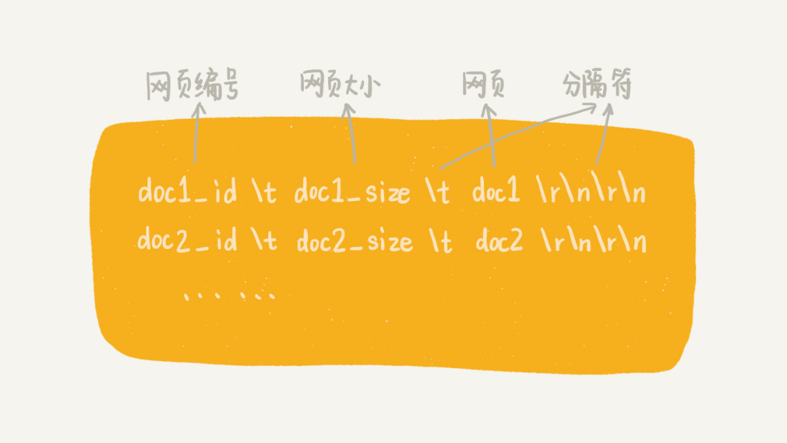

<!DOCTYPE HTML>
<html lang="" >
    <head>
        <meta charset="UTF-8">
        <meta content="text/html; charset=utf-8" http-equiv="Content-Type">
        <title>53 | 算法实战（二）：剖析搜索引擎背后的经典数据结构和算法 · GitBook</title>
        <meta http-equiv="X-UA-Compatible" content="IE=edge" />
        <meta name="description" content="">
        <meta name="generator" content="GitBook 3.2.3">
        
        
        
    
    <link rel="stylesheet" href="../gitbook/style.css">

    
            
                
                <link rel="stylesheet" href="../gitbook/gitbook-plugin-highlight/website.css">
                
            
                
                <link rel="stylesheet" href="../gitbook/gitbook-plugin-search/search.css">
                
            
                
                <link rel="stylesheet" href="../gitbook/gitbook-plugin-fontsettings/website.css">
                
            
        

    

    
        
    
        
    
        
    
        
    
        
    
        
    

        
    
    
    <meta name="HandheldFriendly" content="true"/>
    <meta name="viewport" content="width=device-width, initial-scale=1, user-scalable=no">
    <meta name="apple-mobile-web-app-capable" content="yes">
    <meta name="apple-mobile-web-app-status-bar-style" content="black">
    <link rel="apple-touch-icon-precomposed" sizes="152x152" href="../gitbook/images/apple-touch-icon-precomposed-152.png">
    <link rel="shortcut icon" href="../gitbook/images/favicon.ico" type="image/x-icon">

    
    <link rel="next" href="54.html" />
    
    
    <link rel="prev" href="52.html" />
    

    </head>
    <body>
        
<div class="book">
    <div class="book-summary">
        
            
<div id="book-search-input" role="search">
    <input type="text" placeholder="Type to search" />
</div>

            
                <nav role="navigation">
                


<ul class="summary">
    
    

    

    
        
        
    
        <li class="chapter " data-level="1.1" data-path="../">
            
                <a href="../">
            
                    
                    介绍
            
                </a>
            

            
            <ul class="articles">
                
    
        <li class="chapter " data-level="1.1.1" data-path="00.html">
            
                <a href="00.html">
            
                    
                    开篇词 | 从今天起，跨过“数据结构与算法”这道坎
            
                </a>
            

            
        </li>
    
        <li class="chapter " data-level="1.1.2" data-path="01.html">
            
                <a href="01.html">
            
                    
                    01 | 为什么要学习数据结构和算法？
            
                </a>
            

            
        </li>
    
        <li class="chapter " data-level="1.1.3" data-path="02.html">
            
                <a href="02.html">
            
                    
                    02 | 如何抓住重点，系统高效地学习数据结构与算法？
            
                </a>
            

            
        </li>
    
        <li class="chapter " data-level="1.1.4" data-path="03.html">
            
                <a href="03.html">
            
                    
                    03 | 复杂度分析（上）：如何分析、统计算法的执行效率和资源消耗？
            
                </a>
            

            
        </li>
    
        <li class="chapter " data-level="1.1.5" data-path="04.html">
            
                <a href="04.html">
            
                    
                    04 | 复杂度分析（下）：浅析最好、最坏、平均、均摊时间复杂度
            
                </a>
            

            
        </li>
    
        <li class="chapter " data-level="1.1.6" data-path="04-1.html">
            
                <a href="04-1.html">
            
                    
                    不定期福利第一期 | 数据结构与算法学习书单
            
                </a>
            

            
        </li>
    
        <li class="chapter " data-level="1.1.7" data-path="05.html">
            
                <a href="05.html">
            
                    
                    05 | 数组：为什么很多编程语言中数组都从0开始编号？
            
                </a>
            

            
        </li>
    
        <li class="chapter " data-level="1.1.8" data-path="06.html">
            
                <a href="06.html">
            
                    
                    06 | 链表（上）：如何实现LRU缓存淘汰算法?
            
                </a>
            

            
        </li>
    
        <li class="chapter " data-level="1.1.9" data-path="07.html">
            
                <a href="07.html">
            
                    
                    07 | 链表（下）：如何轻松写出正确的链表代码？
            
                </a>
            

            
        </li>
    
        <li class="chapter " data-level="1.1.10" data-path="08.html">
            
                <a href="08.html">
            
                    
                    08 | 栈：如何实现浏览器的前进和后退功能？
            
                </a>
            

            
        </li>
    
        <li class="chapter " data-level="1.1.11" data-path="09.html">
            
                <a href="09.html">
            
                    
                    09 | 队列：队列在线程池等有限资源池中的应用
            
                </a>
            

            
        </li>
    
        <li class="chapter " data-level="1.1.12" data-path="10.html">
            
                <a href="10.html">
            
                    
                    10 | 递归：如何用三行代码找到“最终推荐人”？
            
                </a>
            

            
        </li>
    
        <li class="chapter " data-level="1.1.13" data-path="11.html">
            
                <a href="11.html">
            
                    
                    11 | 排序（上）：为什么插入排序比冒泡排序更受欢迎？
            
                </a>
            

            
        </li>
    
        <li class="chapter " data-level="1.1.14" data-path="12.html">
            
                <a href="12.html">
            
                    
                    12 | 排序（下）：如何用快排思想在O(n)内查找第K大元素？
            
                </a>
            

            
        </li>
    
        <li class="chapter " data-level="1.1.15" data-path="13.html">
            
                <a href="13.html">
            
                    
                    13 | 线性排序：如何根据年龄给100万用户数据排序？
            
                </a>
            

            
        </li>
    
        <li class="chapter " data-level="1.1.16" data-path="14.html">
            
                <a href="14.html">
            
                    
                    14 | 排序优化：如何实现一个通用的、高性能的排序函数？
            
                </a>
            

            
        </li>
    
        <li class="chapter " data-level="1.1.17" data-path="15.html">
            
                <a href="15.html">
            
                    
                    15 | 二分查找（上）：如何用最省内存的方式实现快速查找功能？
            
                </a>
            

            
        </li>
    
        <li class="chapter " data-level="1.1.18" data-path="16.html">
            
                <a href="16.html">
            
                    
                    16 | 二分查找（下）：如何快速定位IP对应的省份地址？
            
                </a>
            

            
        </li>
    
        <li class="chapter " data-level="1.1.19" data-path="17.html">
            
                <a href="17.html">
            
                    
                    17 | 跳表：为什么Redis一定要用跳表来实现有序集合？
            
                </a>
            

            
        </li>
    
        <li class="chapter " data-level="1.1.20" data-path="18.html">
            
                <a href="18.html">
            
                    
                    18 | 散列表（上）：Word文档中的单词拼写检查功能是如何实现的？
            
                </a>
            

            
        </li>
    
        <li class="chapter " data-level="1.1.21" data-path="19.html">
            
                <a href="19.html">
            
                    
                    19 | 散列表（中）：如何打造一个工业级水平的散列表？
            
                </a>
            

            
        </li>
    
        <li class="chapter " data-level="1.1.22" data-path="20.html">
            
                <a href="20.html">
            
                    
                    20 | 散列表（下）：为什么散列表和链表经常会一起使用？
            
                </a>
            

            
        </li>
    
        <li class="chapter " data-level="1.1.23" data-path="21.html">
            
                <a href="21.html">
            
                    
                    21 | 哈希算法（上）：如何防止数据库中的用户信息被脱库？
            
                </a>
            

            
        </li>
    
        <li class="chapter " data-level="1.1.24" data-path="22.html">
            
                <a href="22.html">
            
                    
                    22 | 哈希算法（下）：哈希算法在分布式系统中有哪些应用？
            
                </a>
            

            
        </li>
    
        <li class="chapter " data-level="1.1.25" data-path="23.html">
            
                <a href="23.html">
            
                    
                    23 | 二叉树基础（上）：什么样的二叉树适合用数组来存储？
            
                </a>
            

            
        </li>
    
        <li class="chapter " data-level="1.1.26" data-path="24.html">
            
                <a href="24.html">
            
                    
                    24 | 二叉树基础（下）：有了如此高效的散列表，为什么还需要二叉树？
            
                </a>
            

            
        </li>
    
        <li class="chapter " data-level="1.1.27" data-path="25.html">
            
                <a href="25.html">
            
                    
                    25 | 红黑树（上）：为什么工程中都用红黑树这种二叉树？
            
                </a>
            

            
        </li>
    
        <li class="chapter " data-level="1.1.28" data-path="26.html">
            
                <a href="26.html">
            
                    
                    26 | 红黑树（下）：掌握这些技巧，你也可以实现一个红黑树
            
                </a>
            

            
        </li>
    
        <li class="chapter " data-level="1.1.29" data-path="27.html">
            
                <a href="27.html">
            
                    
                    27 | 递归树：如何借助树来求解递归算法的时间复杂度？
            
                </a>
            

            
        </li>
    
        <li class="chapter " data-level="1.1.30" data-path="27-1.html">
            
                <a href="27-1.html">
            
                    
                    不定期福利第二期 | 王争：羁绊前行的，不是肆虐的狂风，而是内心的迷茫
            
                </a>
            

            
        </li>
    
        <li class="chapter " data-level="1.1.31" data-path="28.html">
            
                <a href="28.html">
            
                    
                    28 | 堆和堆排序：为什么说堆排序没有快速排序快？
            
                </a>
            

            
        </li>
    
        <li class="chapter " data-level="1.1.32" data-path="29.html">
            
                <a href="29.html">
            
                    
                    29 | 堆的应用：如何快速获取到Top 10最热门的搜索关键词？
            
                </a>
            

            
        </li>
    
        <li class="chapter " data-level="1.1.33" data-path="30.html">
            
                <a href="30.html">
            
                    
                    30 | 图的表示：如何存储微博、微信等社交网络中的好友关系？
            
                </a>
            

            
        </li>
    
        <li class="chapter " data-level="1.1.34" data-path="31.html">
            
                <a href="31.html">
            
                    
                    31 | 深度和广度优先搜索：如何找出社交网络中的三度好友关系？
            
                </a>
            

            
        </li>
    
        <li class="chapter " data-level="1.1.35" data-path="32.html">
            
                <a href="32.html">
            
                    
                    32 | 字符串匹配基础（上）：如何借助哈希算法实现高效字符串匹配？
            
                </a>
            

            
        </li>
    
        <li class="chapter " data-level="1.1.36" data-path="33.html">
            
                <a href="33.html">
            
                    
                    33 | 字符串匹配基础（中）：如何实现文本编辑器中的查找功能？
            
                </a>
            

            
        </li>
    
        <li class="chapter " data-level="1.1.37" data-path="34.html">
            
                <a href="34.html">
            
                    
                    34 | 字符串匹配基础（下）：如何借助BM算法轻松理解KMP算法？
            
                </a>
            

            
        </li>
    
        <li class="chapter " data-level="1.1.38" data-path="35.html">
            
                <a href="35.html">
            
                    
                    35 | Trie树：如何实现搜索引擎的搜索关键词提示功能？
            
                </a>
            

            
        </li>
    
        <li class="chapter " data-level="1.1.39" data-path="36.html">
            
                <a href="36.html">
            
                    
                    36 | AC自动机：如何用多模式串匹配实现敏感词过滤功能？
            
                </a>
            

            
        </li>
    
        <li class="chapter " data-level="1.1.40" data-path="37.html">
            
                <a href="37.html">
            
                    
                    37 | 贪心算法：如何用贪心算法实现Huffman压缩编码？
            
                </a>
            

            
        </li>
    
        <li class="chapter " data-level="1.1.41" data-path="38.html">
            
                <a href="38.html">
            
                    
                    38 | 分治算法：谈一谈大规模计算框架MapReduce中的分治思想
            
                </a>
            

            
        </li>
    
        <li class="chapter " data-level="1.1.42" data-path="38-1.html">
            
                <a href="38-1.html">
            
                    
                    不定期福利第三期 | 测一测你的算法阶段学习成果
            
                </a>
            

            
        </li>
    
        <li class="chapter " data-level="1.1.43" data-path="39.html">
            
                <a href="39.html">
            
                    
                    39 | 回溯算法：从电影《蝴蝶效应》中学习回溯算法的核心思想
            
                </a>
            

            
        </li>
    
        <li class="chapter " data-level="1.1.44" data-path="40.html">
            
                <a href="40.html">
            
                    
                    40 | 初识动态规划：如何巧妙解决“双十一”购物时的凑单问题？
            
                </a>
            

            
        </li>
    
        <li class="chapter " data-level="1.1.45" data-path="40-1.html">
            
                <a href="40-1.html">
            
                    
                    不定期福利第四期 | 刘超：我是怎么学习《数据结构与算法之美》的？
            
                </a>
            

            
        </li>
    
        <li class="chapter " data-level="1.1.46" data-path="41.html">
            
                <a href="41.html">
            
                    
                    41 | 动态规划理论：一篇文章带你彻底搞懂最优子结构、无后效性和重复子问题
            
                </a>
            

            
        </li>
    
        <li class="chapter " data-level="1.1.47" data-path="42.html">
            
                <a href="42.html">
            
                    
                    42 | 动态规划实战：如何实现搜索引擎中的拼写纠错功能？
            
                </a>
            

            
        </li>
    
        <li class="chapter " data-level="1.1.48" data-path="43.html">
            
                <a href="43.html">
            
                    
                    43 | 拓扑排序：如何确定代码源文件的编译依赖关系？
            
                </a>
            

            
        </li>
    
        <li class="chapter " data-level="1.1.49" data-path="44.html">
            
                <a href="44.html">
            
                    
                    44 | 最短路径：地图软件是如何计算出最优出行路径的？
            
                </a>
            

            
        </li>
    
        <li class="chapter " data-level="1.1.50" data-path="45.html">
            
                <a href="45.html">
            
                    
                    45 | 位图：如何实现网页爬虫中的URL去重功能？
            
                </a>
            

            
        </li>
    
        <li class="chapter " data-level="1.1.51" data-path="46.html">
            
                <a href="46.html">
            
                    
                    46 | 概率统计：如何利用朴素贝叶斯算法过滤垃圾短信？
            
                </a>
            

            
        </li>
    
        <li class="chapter " data-level="1.1.52" data-path="47.html">
            
                <a href="47.html">
            
                    
                    47 | 向量空间：如何实现一个简单的音乐推荐系统？
            
                </a>
            

            
        </li>
    
        <li class="chapter " data-level="1.1.53" data-path="48.html">
            
                <a href="48.html">
            
                    
                    48 | B+树：MySQL数据库索引是如何实现的？
            
                </a>
            

            
        </li>
    
        <li class="chapter " data-level="1.1.54" data-path="49.html">
            
                <a href="49.html">
            
                    
                    49 | 搜索：如何用A*搜索算法实现游戏中的寻路功能？
            
                </a>
            

            
        </li>
    
        <li class="chapter " data-level="1.1.55" data-path="50.html">
            
                <a href="50.html">
            
                    
                    50 | 索引：如何在海量数据中快速查找某个数据？
            
                </a>
            

            
        </li>
    
        <li class="chapter " data-level="1.1.56" data-path="51.html">
            
                <a href="51.html">
            
                    
                    51 | 并行算法：如何利用并行处理提高算法的执行效率？
            
                </a>
            

            
        </li>
    
        <li class="chapter " data-level="1.1.57" data-path="52.html">
            
                <a href="52.html">
            
                    
                    52 | 算法实战（一）：剖析Redis常用数据类型对应的数据结构
            
                </a>
            

            
        </li>
    
        <li class="chapter active" data-level="1.1.58" data-path="53.html">
            
                <a href="53.html">
            
                    
                    53 | 算法实战（二）：剖析搜索引擎背后的经典数据结构和算法
            
                </a>
            

            
        </li>
    
        <li class="chapter " data-level="1.1.59" data-path="54.html">
            
                <a href="54.html">
            
                    
                    54 | 算法实战（三）：剖析高性能队列Disruptor背后的数据结构和算法
            
                </a>
            

            
        </li>
    
        <li class="chapter " data-level="1.1.60" data-path="55.html">
            
                <a href="55.html">
            
                    
                    55 | 算法实战（四）：剖析微服务接口鉴权限流背后的数据结构和算法
            
                </a>
            

            
        </li>
    
        <li class="chapter " data-level="1.1.61" data-path="56.html">
            
                <a href="56.html">
            
                    
                    56 | 算法实战（五）：如何用学过的数据结构和算法实现一个短网址系统？
            
                </a>
            

            
        </li>
    
        <li class="chapter " data-level="1.1.62" data-path="56-1.html">
            
                <a href="56-1.html">
            
                    
                    春节7天练 | Day 1：数组和链表
            
                </a>
            

            
        </li>
    
        <li class="chapter " data-level="1.1.63" data-path="56-2.html">
            
                <a href="56-2.html">
            
                    
                    春节7天练 | Day 2：栈、队列和递归
            
                </a>
            

            
        </li>
    
        <li class="chapter " data-level="1.1.64" data-path="56-3.html">
            
                <a href="56-3.html">
            
                    
                    春节7天练 | Day 3：排序和二分查找
            
                </a>
            

            
        </li>
    
        <li class="chapter " data-level="1.1.65" data-path="56-4.html">
            
                <a href="56-4.html">
            
                    
                    春节7天练 | Day 4：散列表和字符串
            
                </a>
            

            
        </li>
    
        <li class="chapter " data-level="1.1.66" data-path="56-5.html">
            
                <a href="56-5.html">
            
                    
                    春节7天练 | Day 5：二叉树和堆
            
                </a>
            

            
        </li>
    
        <li class="chapter " data-level="1.1.67" data-path="56-6.html">
            
                <a href="56-6.html">
            
                    
                    春节7天练 | Day 6：图
            
                </a>
            

            
        </li>
    
        <li class="chapter " data-level="1.1.68" data-path="56-7.html">
            
                <a href="56-7.html">
            
                    
                    春节7天练 | Day 7：贪心、分治、回溯和动态规划
            
                </a>
            

            
        </li>
    
        <li class="chapter " data-level="1.1.69" data-path="56-8.html">
            
                <a href="56-8.html">
            
                    
                    用户故事 | Jerry银银：这一年我的脑海里只有算法
            
                </a>
            

            
        </li>
    
        <li class="chapter " data-level="1.1.70" data-path="56-9.html">
            
                <a href="56-9.html">
            
                    
                    用户故事 | zixuan：站在思维的高处，才有足够的视野和能力欣赏“美”
            
                </a>
            

            
        </li>
    
        <li class="chapter " data-level="1.1.71" data-path="57.html">
            
                <a href="57.html">
            
                    
                    总结课 | 在实际开发中，如何权衡选择使用哪种数据结构和算法？
            
                </a>
            

            
        </li>
    
        <li class="chapter " data-level="1.1.72" data-path="99.html">
            
                <a href="99.html">
            
                    
                    结束语 | 送君千里，终须一别
            
                </a>
            

            
        </li>
    

            </ul>
            
        </li>
    

    

    <li class="divider"></li>

    <li>
        <a href="https://www.gitbook.com" target="blank" class="gitbook-link">
            Published with GitBook
        </a>
    </li>
</ul>


                </nav>
            
        
    </div>

    <div class="book-body">
        
            <div class="body-inner">
                
                    

<div class="book-header" role="navigation">
    

    <!-- Title -->
    <h1>
        <i class="fa fa-circle-o-notch fa-spin"></i>
        <a href=".." >53 | 算法实战（二）：剖析搜索引擎背后的经典数据结构和算法</a>
    </h1>
</div>


                    <div class="page-wrapper" tabindex="-1" role="main">
                        <div class="page-inner">
                            
<div id="book-search-results">
    <div class="search-noresults">
    
                                <section class="normal markdown-section">
                                
                                <h1 id="53--&#x7B97;&#x6CD5;&#x5B9E;&#x6218;&#xFF08;&#x4E8C;&#xFF09;&#xFF1A;&#x5256;&#x6790;&#x641C;&#x7D22;&#x5F15;&#x64CE;&#x80CC;&#x540E;&#x7684;&#x7ECF;&#x5178;&#x6570;&#x636E;&#x7ED3;&#x6784;&#x548C;&#x7B97;&#x6CD5;">53 | &#x7B97;&#x6CD5;&#x5B9E;&#x6218;&#xFF08;&#x4E8C;&#xFF09;&#xFF1A;&#x5256;&#x6790;&#x641C;&#x7D22;&#x5F15;&#x64CE;&#x80CC;&#x540E;&#x7684;&#x7ECF;&#x5178;&#x6570;&#x636E;&#x7ED3;&#x6784;&#x548C;&#x7B97;&#x6CD5;</h1>
<p>&#x50CF;&#x767E;&#x5EA6;&#x3001;Google &#x8FD9;&#x6837;&#x7684;&#x641C;&#x7D22;&#x5F15;&#x64CE;&#xFF0C;&#x5728;&#x6211;&#x4EEC;&#x5E73;&#x65F6;&#x7684;&#x5DE5;&#x4F5C;&#x3001;&#x751F;&#x6D3B;&#x4E2D;&#xFF0C;&#x51E0;&#x4E4E;&#x5929;&#x5929;&#x90FD;&#x4F1A;&#x7528;&#x5230;&#x3002;&#x5982;&#x679C;&#x6211;&#x4EEC;&#x628A;&#x641C;&#x7D22;&#x5F15;&#x64CE;&#x4E5F;&#x5F53;&#x4F5C;&#x4E00;&#x4E2A;&#x4E92;&#x8054;&#x7F51;&#x4EA7;&#x54C1;&#x7684;&#x8BDD;&#xFF0C;&#x90A3;&#x5B83;&#x8DDF;&#x793E;&#x4EA4;&#x3001;&#x7535;&#x5546;&#x8FD9;&#x4E9B;&#x7C7B;&#x578B;&#x7684;&#x4EA7;&#x54C1;&#x76F8;&#x6BD4;&#xFF0C;&#x6709;&#x4E00;&#x4E2A;&#x975E;&#x5E38;&#x5927;&#x7684;&#x533A;&#x522B;&#xFF0C;&#x90A3;&#x5C31;&#x662F;&#xFF0C;&#x5B83;&#x662F;&#x4E00;&#x4E2A;&#x6280;&#x672F;&#x9A71;&#x52A8;&#x7684;&#x4EA7;&#x54C1;&#x3002;&#x6240;&#x8C13;&#x6280;&#x672F;&#x9A71;&#x52A8;&#x662F;&#x6307;&#xFF0C;&#x641C;&#x7D22;&#x5F15;&#x64CE;&#x5B9E;&#x73B0;&#x8D77;&#x6765;&#xFF0C;&#x6280;&#x672F;&#x96BE;&#x5EA6;&#x975E;&#x5E38;&#x5927;&#xFF0C;&#x6280;&#x672F;&#x7684;&#x597D;&#x574F;&#x76F4;&#x63A5;&#x51B3;&#x5B9A;&#x4E86;&#x8FD9;&#x4E2A;&#x4EA7;&#x54C1;&#x7684;&#x6838;&#x5FC3;&#x7ADE;&#x4E89;&#x529B;&#x3002;</p>
<p>&#x5728;&#x641C;&#x7D22;&#x5F15;&#x64CE;&#x7684;&#x8BBE;&#x8BA1;&#x4E0E;&#x5B9E;&#x73B0;&#x4E2D;&#xFF0C;&#x4F1A;&#x7528;&#x5230;&#x5927;&#x91CF;&#x7684;&#x7B97;&#x6CD5;&#x3002;&#x6709;&#x5F88;&#x591A;&#x9488;&#x5BF9;&#x7279;&#x5B9A;&#x95EE;&#x9898;&#x7684;&#x7B97;&#x6CD5;&#xFF0C;&#x4E5F;&#x6709;&#x5F88;&#x591A;&#x6211;&#x4EEC;&#x4E13;&#x680F;&#x4E2D;&#x8BB2;&#x5230;&#x7684;&#x57FA;&#x7840;&#x7B97;&#x6CD5;&#x3002;&#x6240;&#x4EE5;&#xFF0C;&#x767E;&#x5EA6;&#x3001;Google &#x8FD9;&#x6837;&#x7684;&#x641C;&#x7D22;&#x5F15;&#x64CE;&#x516C;&#x53F8;&#xFF0C;&#x5728;&#x9762;&#x8BD5;&#x7684;&#x65F6;&#x5019;&#xFF0C;&#x4F1A;&#x683C;&#x5916;&#x91CD;&#x89C6;&#x8003;&#x5BDF;&#x5019;&#x9009;&#x4EBA;&#x7684;&#x7B97;&#x6CD5;&#x80FD;&#x529B;&#x3002;</p>
<p><strong>&#x4ECA;&#x5929;&#x6211;&#x5C31;&#x501F;&#x52A9;&#x641C;&#x7D22;&#x5F15;&#x64CE;&#xFF0C;&#x8FD9;&#x6837;&#x4E00;&#x4E2A;&#x975E;&#x5E38;&#x6709;&#x6280;&#x672F;&#x542B;&#x91CF;&#x7684;&#x4EA7;&#x54C1;&#xFF0C;&#x6765;&#x7ED9;&#x4F60;&#x5C55;&#x793A;&#x4E00;&#x4E0B;&#xFF0C;&#x6570;&#x636E;&#x7ED3;&#x6784;&#x548C;&#x7B97;&#x6CD5;&#x662F;&#x5982;&#x4F55;&#x5E94;&#x7528;&#x5728;&#x5176;&#x4E2D;&#x7684;&#x3002;</strong></p>
<h2 id="&#x6574;&#x4F53;&#x7CFB;&#x7EDF;&#x4ECB;&#x7ECD;">&#x6574;&#x4F53;&#x7CFB;&#x7EDF;&#x4ECB;&#x7ECD;</h2>
<p>&#x50CF; Google &#x8FD9;&#x6837;&#x7684;&#x5927;&#x578B;&#x5546;&#x7528;&#x641C;&#x7D22;&#x5F15;&#x64CE;&#xFF0C;&#x6709;&#x6210;&#x5343;&#x4E0A;&#x4E07;&#x7684;&#x5DE5;&#x7A0B;&#x5E08;&#xFF0C;&#x5341;&#x5E74;&#x5982;&#x4E00;&#x65E5;&#x5730;&#x5BF9;&#x5B83;&#x8FDB;&#x884C;&#x4F18;&#x5316;&#x6539;&#x8FDB;&#xFF0C;&#x6240;&#x4EE5;&#xFF0C;&#x5B83;&#x6240;&#x5305;&#x542B;&#x7684;&#x6280;&#x672F;&#x7EC6;&#x8282;&#x975E;&#x5E38;&#x591A;&#x3002;&#x6211;&#x5F88;&#x96BE;&#x3001;&#x4E5F;&#x6CA1;&#x6709;&#x8FD9;&#x4E2A;&#x80FD;&#x529B;&#xFF0C;&#x901A;&#x8FC7;&#x4E00;&#x7BC7;&#x6587;&#x7AE0;&#x628A;&#x6240;&#x6709;&#x7EC6;&#x8282;&#x90FD;&#x8BB2;&#x6E05;&#x695A;&#xFF0C;&#x5F53;&#x7136;&#x8FD9;&#x4E5F;&#x4E0D;&#x662F;&#x6211;&#x4EEC;&#x4E13;&#x680F;&#x6240;&#x4E13;&#x6CE8;&#x7684;&#x5185;&#x5BB9;&#x3002;</p>
<p>&#x6240;&#x4EE5;&#xFF0C;&#x63A5;&#x4E0B;&#x6765;&#x7684;&#x8BB2;&#x89E3;&#xFF0C;&#x6211;&#x4E3B;&#x8981;&#x7ED9;&#x4F60;&#x5C55;&#x793A;&#xFF0C;&#x5982;&#x4F55;&#x5728;&#x4E00;&#x53F0;&#x673A;&#x5668;&#x4E0A;&#xFF08;&#x5047;&#x8BBE;&#x8FD9;&#x53F0;&#x673A;&#x5668;&#x7684;&#x5185;&#x5B58;&#x662F; 8GB&#xFF0C; &#x786C;&#x76D8;&#x662F; 100 &#x591A; GB&#xFF09;&#xFF0C;&#x901A;&#x8FC7;&#x5C11;&#x91CF;&#x7684;&#x4EE3;&#x7801;&#xFF0C;&#x5B9E;&#x73B0;&#x4E00;&#x4E2A;&#x5C0F;&#x578B;&#x641C;&#x7D22;&#x5F15;&#x64CE;&#x3002;&#x4E0D;&#x8FC7;&#xFF0C;&#x9EBB;&#x96C0;&#x867D;&#x5C0F;&#xFF0C;&#x4E94;&#x810F;&#x4FF1;&#x5168;&#x3002;&#x8DDF;&#x5927;&#x578B;&#x641C;&#x7D22;&#x5F15;&#x64CE;&#x76F8;&#x6BD4;&#xFF0C;&#x5B9E;&#x73B0;&#x8FD9;&#x6837;&#x4E00;&#x4E2A;&#x5C0F;&#x578B;&#x641C;&#x7D22;&#x5F15;&#x64CE;&#x6240;&#x7528;&#x5230;&#x7684;&#x7406;&#x8BBA;&#x57FA;&#x7840;&#x662F;&#x76F8;&#x901A;&#x7684;&#x3002;</p>
<p>&#x641C;&#x7D22;&#x5F15;&#x64CE;&#x5927;&#x81F4;&#x53EF;&#x4EE5;&#x5206;&#x4E3A;&#x56DB;&#x4E2A;&#x90E8;&#x5206;&#xFF1A;<strong>&#x641C;&#x96C6;</strong>&#x3001;<strong>&#x5206;&#x6790;</strong>&#x3001;<strong>&#x7D22;&#x5F15;</strong>&#x3001;<strong>&#x67E5;&#x8BE2;</strong>&#x3002;&#x5176;&#x4E2D;&#xFF0C;&#x641C;&#x96C6;&#xFF0C;&#x5C31;&#x662F;&#x6211;&#x4EEC;&#x5E38;&#x8BF4;&#x7684;&#x5229;&#x7528;&#x722C;&#x866B;&#x722C;&#x53D6;&#x7F51;&#x9875;&#x3002;&#x5206;&#x6790;&#xFF0C;&#x4E3B;&#x8981;&#x8D1F;&#x8D23;&#x7F51;&#x9875;&#x5185;&#x5BB9;&#x62BD;&#x53D6;&#x3001;&#x5206;&#x8BCD;&#xFF0C;&#x6784;&#x5EFA;&#x4E34;&#x65F6;&#x7D22;&#x5F15;&#xFF0C;&#x8BA1;&#x7B97; PageRank &#x503C;&#x8FD9;&#x51E0;&#x90E8;&#x5206;&#x5DE5;&#x4F5C;&#x3002;&#x7D22;&#x5F15;&#xFF0C;&#x4E3B;&#x8981;&#x8D1F;&#x8D23;&#x901A;&#x8FC7;&#x5206;&#x6790;&#x9636;&#x6BB5;&#x5F97;&#x5230;&#x7684;&#x4E34;&#x65F6;&#x7D22;&#x5F15;&#xFF0C;&#x6784;&#x5EFA;&#x5012;&#x6392;&#x7D22;&#x5F15;&#x3002;&#x67E5;&#x8BE2;&#xFF0C;&#x4E3B;&#x8981;&#x8D1F;&#x8D23;&#x54CD;&#x5E94;&#x7528;&#x6237;&#x7684;&#x8BF7;&#x6C42;&#xFF0C;&#x6839;&#x636E;&#x5012;&#x6392;&#x7D22;&#x5F15;&#x83B7;&#x53D6;&#x76F8;&#x5173;&#x7F51;&#x9875;&#xFF0C;&#x8BA1;&#x7B97;&#x7F51;&#x9875;&#x6392;&#x540D;&#xFF0C;&#x8FD4;&#x56DE;&#x67E5;&#x8BE2;&#x7ED3;&#x679C;&#x7ED9;&#x7528;&#x6237;&#x3002;</p>
<p>&#x63A5;&#x4E0B;&#x6765;&#xFF0C;&#x6211;&#x5C31;&#x6309;&#x7167;&#x7F51;&#x9875;&#x5904;&#x7406;&#x7684;&#x751F;&#x547D;&#x5468;&#x671F;&#xFF0C;&#x4ECE;&#x8FD9;&#x56DB;&#x4E2A;&#x9636;&#x6BB5;&#xFF0C;&#x4F9D;&#x6B21;&#x6765;&#x7ED9;&#x4F60;&#x8BB2;&#x89E3;&#xFF0C;&#x4E00;&#x4E2A;&#x7F51;&#x9875;&#x4ECE;&#x88AB;&#x722C;&#x53D6;&#x5230;&#x6700;&#x7EC8;&#x5C55;&#x793A;&#x7ED9;&#x7528;&#x6237;&#xFF0C;&#x8FD9;&#x6837;&#x4E00;&#x4E2A;&#x5B8C;&#x6574;&#x7684;&#x8FC7;&#x7A0B;&#x3002;&#x4E0E;&#x6B64;&#x540C;&#x65F6;&#xFF0C;&#x6211;&#x4F1A;&#x7A7F;&#x63D2;&#x8BB2;&#x89E3;&#xFF0C;&#x8FD9;&#x4E2A;&#x8FC7;&#x7A0B;&#x4E2D;&#x9700;&#x8981;&#x7528;&#x5230;&#x54EA;&#x4E9B;&#x6570;&#x636E;&#x7ED3;&#x6784;&#x548C;&#x7B97;&#x6CD5;&#x3002;</p>
<h2 id="&#x641C;&#x96C6;">&#x641C;&#x96C6;</h2>
<p>&#x73B0;&#x5728;&#xFF0C;&#x4E92;&#x8054;&#x7F51;&#x8D8A;&#x6765;&#x8D8A;&#x53D1;&#x8FBE;&#xFF0C;&#x7F51;&#x7AD9;&#x8D8A;&#x6765;&#x8D8A;&#x591A;&#xFF0C;&#x5BF9;&#x5E94;&#x7684;&#x7F51;&#x9875;&#x4E5F;&#x5C31;&#x8D8A;&#x6765;&#x8D8A;&#x591A;&#x3002;&#x5BF9;&#x4E8E;&#x641C;&#x7D22;&#x5F15;&#x64CE;&#x6765;&#x8BF4;&#xFF0C;&#x5B83;&#x4E8B;&#x5148;&#x5E76;&#x4E0D;&#x77E5;&#x9053;&#x7F51;&#x9875;&#x90FD;&#x5728;&#x54EA;&#x91CC;&#x3002;&#x6253;&#x4E2A;&#x6BD4;&#x65B9;&#x6765;&#x8BF4;&#x5C31;&#x662F;&#xFF0C;&#x6211;&#x4EEC;&#x53EA;&#x77E5;&#x9053;&#x6D77;&#x91CC;&#x9762;&#x6709;&#x5F88;&#x591A;&#x9C7C;&#xFF0C;&#x4F46;&#x5374;&#x5E76;&#x4E0D;&#x77E5;&#x9053;&#x9C7C;&#x5728;&#x54EA;&#x91CC;&#x3002;&#x90A3;&#x641C;&#x7D22;&#x5F15;&#x64CE;&#x662F;&#x5982;&#x4F55;&#x722C;&#x53D6;&#x7F51;&#x9875;&#x7684;&#x5462;&#xFF1F;</p>
<p>&#x641C;&#x7D22;&#x5F15;&#x64CE;&#x628A;&#x6574;&#x4E2A;&#x4E92;&#x8054;&#x7F51;&#x770B;&#x4F5C;&#x6570;&#x636E;&#x7ED3;&#x6784;&#x4E2D;&#x7684;&#x6709;&#x5411;&#x56FE;&#xFF0C;&#x628A;&#x6BCF;&#x4E2A;&#x9875;&#x9762;&#x770B;&#x4F5C;&#x4E00;&#x4E2A;&#x9876;&#x70B9;&#x3002;&#x5982;&#x679C;&#x67D0;&#x4E2A;&#x9875;&#x9762;&#x4E2D;&#x5305;&#x542B;&#x53E6;&#x5916;&#x4E00;&#x4E2A;&#x9875;&#x9762;&#x7684;&#x94FE;&#x63A5;&#xFF0C;&#x90A3;&#x6211;&#x4EEC;&#x5C31;&#x5728;&#x4E24;&#x4E2A;&#x9876;&#x70B9;&#x4E4B;&#x95F4;&#x8FDE;&#x4E00;&#x6761;&#x6709;&#x5411;&#x8FB9;&#x3002;&#x6211;&#x4EEC;&#x53EF;&#x4EE5;&#x5229;&#x7528;&#x56FE;&#x7684;&#x904D;&#x5386;&#x641C;&#x7D22;&#x7B97;&#x6CD5;&#xFF0C;&#x6765;&#x904D;&#x5386;&#x6574;&#x4E2A;&#x4E92;&#x8054;&#x7F51;&#x4E2D;&#x7684;&#x7F51;&#x9875;&#x3002;</p>
<p>&#x6211;&#x4EEC;&#x524D;&#x9762;&#x4ECB;&#x7ECD;&#x8FC7;&#x4E24;&#x79CD;&#x56FE;&#x7684;&#x904D;&#x5386;&#x65B9;&#x6CD5;&#xFF0C;&#x6DF1;&#x5EA6;&#x4F18;&#x5148;&#x548C;&#x5E7F;&#x5EA6;&#x4F18;&#x5148;&#x3002;&#x641C;&#x7D22;&#x5F15;&#x64CE;&#x91C7;&#x7528;&#x7684;&#x662F;&#x5E7F;&#x5EA6;&#x4F18;&#x5148;&#x641C;&#x7D22;&#x7B56;&#x7565;&#x3002;&#x5177;&#x4F53;&#x70B9;&#x8BB2;&#x7684;&#x8BDD;&#xFF0C;&#x90A3;&#x5C31;&#x662F;&#xFF0C;&#x6211;&#x4EEC;&#x5148;&#x627E;&#x4E00;&#x4E9B;&#x6BD4;&#x8F83;&#x77E5;&#x540D;&#x7684;&#x7F51;&#x9875;&#xFF08;&#x4E13;&#x4E1A;&#x7684;&#x53EB;&#x6CD5;&#x662F;&#x6743;&#x91CD;&#x6BD4;&#x8F83;&#x9AD8;&#xFF09;&#x7684;&#x94FE;&#x63A5;&#xFF08;&#x6BD4;&#x5982;&#x65B0;&#x6D6A;&#x4E3B;&#x9875;&#x7F51;&#x5740;&#x3001;&#x817E;&#x8BAF;&#x4E3B;&#x9875;&#x7F51;&#x5740;&#x7B49;&#xFF09;&#xFF0C;&#x4F5C;&#x4E3A;&#x79CD;&#x5B50;&#x7F51;&#x9875;&#x94FE;&#x63A5;&#xFF0C;&#x653E;&#x5165;&#x5230;&#x961F;&#x5217;&#x4E2D;&#x3002;&#x722C;&#x866B;&#x6309;&#x7167;&#x5E7F;&#x5EA6;&#x4F18;&#x5148;&#x7684;&#x7B56;&#x7565;&#xFF0C;&#x4E0D;&#x505C;&#x5730;&#x4ECE;&#x961F;&#x5217;&#x4E2D;&#x53D6;&#x51FA;&#x94FE;&#x63A5;&#xFF0C;&#x7136;&#x540E;&#x53D6;&#x722C;&#x53D6;&#x5BF9;&#x5E94;&#x7684;&#x7F51;&#x9875;&#xFF0C;&#x89E3;&#x6790;&#x51FA;&#x7F51;&#x9875;&#x91CC;&#x5305;&#x542B;&#x7684;&#x5176;&#x4ED6;&#x7F51;&#x9875;&#x94FE;&#x63A5;&#xFF0C;&#x518D;&#x5C06;&#x89E3;&#x6790;&#x51FA;&#x6765;&#x7684;&#x94FE;&#x63A5;&#x6DFB;&#x52A0;&#x5230;&#x961F;&#x5217;&#x4E2D;&#x3002;</p>
<p>&#x57FA;&#x672C;&#x7684;&#x539F;&#x7406;&#x5C31;&#x662F;&#x8FD9;&#x4E48;&#x7B80;&#x5355;&#x3002;&#x4F46;&#x843D;&#x5B9E;&#x5230;&#x5B9E;&#x73B0;&#x5C42;&#x9762;&#xFF0C;&#x8FD8;&#x6709;&#x5F88;&#x591A;&#x6280;&#x672F;&#x7EC6;&#x8282;&#x3002;&#x6211;&#x4E0B;&#x9762;&#x501F;&#x52A9;&#x641C;&#x96C6;&#x9636;&#x6BB5;&#x6D89;&#x53CA;&#x7684;&#x51E0;&#x4E2A;&#x91CD;&#x8981;&#x6587;&#x4EF6;&#xFF0C;&#x6765;&#x7ED9;&#x4F60;&#x89E3;&#x91CA;&#x4E00;&#x4E0B;&#x641C;&#x96C6;&#x5DE5;&#x7A0B;&#x90FD;&#x6709;&#x54EA;&#x4E9B;&#x5173;&#x952E;&#x6280;&#x672F;&#x7EC6;&#x8282;&#x3002;</p>
<h3 id="1-&#x5F85;&#x722C;&#x53D6;&#x7F51;&#x9875;&#x94FE;&#x63A5;&#x6587;&#x4EF6;&#xFF1A;linksbin">1. &#x5F85;&#x722C;&#x53D6;&#x7F51;&#x9875;&#x94FE;&#x63A5;&#x6587;&#x4EF6;&#xFF1A;links.bin</h3>
<p>&#x5728;&#x5E7F;&#x5EA6;&#x4F18;&#x5148;&#x641C;&#x7D22;&#x722C;&#x53D6;&#x9875;&#x9762;&#x7684;&#x8FC7;&#x7A0B;&#x4E2D;&#xFF0C;&#x722C;&#x866B;&#x4F1A;&#x4E0D;&#x505C;&#x5730;&#x89E3;&#x6790;&#x9875;&#x9762;&#x94FE;&#x63A5;&#xFF0C;&#x5C06;&#x5176;&#x653E;&#x5230;&#x961F;&#x5217;&#x4E2D;&#x3002;&#x4E8E;&#x662F;&#xFF0C;&#x961F;&#x5217;&#x4E2D;&#x7684;&#x94FE;&#x63A5;&#x5C31;&#x4F1A;&#x8D8A;&#x6765;&#x8D8A;&#x591A;&#xFF0C;&#x53EF;&#x80FD;&#x4F1A;&#x591A;&#x5230;&#x5185;&#x5B58;&#x653E;&#x4E0D;&#x4E0B;&#x3002;&#x6240;&#x4EE5;&#xFF0C;&#x6211;&#x4EEC;&#x7528;&#x4E00;&#x4E2A;&#x5B58;&#x50A8;&#x5728;&#x78C1;&#x76D8;&#x4E2D;&#x7684;&#x6587;&#x4EF6;&#xFF08;links.bin&#xFF09;&#x6765;&#x4F5C;&#x4E3A;&#x5E7F;&#x5EA6;&#x4F18;&#x5148;&#x641C;&#x7D22;&#x4E2D;&#x7684;&#x961F;&#x5217;&#x3002;&#x722C;&#x866B;&#x4ECE; links.bin &#x6587;&#x4EF6;&#x4E2D;&#xFF0C;&#x53D6;&#x51FA;&#x94FE;&#x63A5;&#x53BB;&#x722C;&#x53D6;&#x5BF9;&#x5E94;&#x7684;&#x9875;&#x9762;&#x3002;&#x7B49;&#x722C;&#x53D6;&#x5230;&#x7F51;&#x9875;&#x4E4B;&#x540E;&#xFF0C;&#x5C06;&#x89E3;&#x6790;&#x51FA;&#x6765;&#x7684;&#x94FE;&#x63A5;&#xFF0C;&#x76F4;&#x63A5;&#x5B58;&#x50A8;&#x5230; links.bin &#x6587;&#x4EF6;&#x4E2D;&#x3002;</p>
<p>&#x8FD9;&#x6837;&#x7528;&#x6587;&#x4EF6;&#x6765;&#x5B58;&#x50A8;&#x7F51;&#x9875;&#x94FE;&#x63A5;&#x7684;&#x65B9;&#x5F0F;&#xFF0C;&#x8FD8;&#x6709;&#x5176;&#x4ED6;&#x597D;&#x5904;&#x3002;&#x6BD4;&#x5982;&#xFF0C;&#x652F;&#x6301;&#x65AD;&#x70B9;&#x7EED;&#x722C;&#x3002;&#x4E5F;&#x5C31;&#x662F;&#x8BF4;&#xFF0C;&#x5F53;&#x673A;&#x5668;&#x65AD;&#x7535;&#x4E4B;&#x540E;&#xFF0C;&#x7F51;&#x9875;&#x94FE;&#x63A5;&#x4E0D;&#x4F1A;&#x4E22;&#x5931;&#xFF1B;&#x5F53;&#x673A;&#x5668;&#x91CD;&#x542F;&#x4E4B;&#x540E;&#xFF0C;&#x8FD8;&#x53EF;&#x4EE5;&#x4ECE;&#x4E4B;&#x524D;&#x722C;&#x53D6;&#x5230;&#x7684;&#x4F4D;&#x7F6E;&#x7EE7;&#x7EED;&#x722C;&#x53D6;&#x3002;</p>
<p>&#x5173;&#x4E8E;&#x5982;&#x4F55;&#x89E3;&#x6790;&#x9875;&#x9762;&#x83B7;&#x53D6;&#x94FE;&#x63A5;&#xFF0C;&#x6211;&#x989D;&#x5916;&#x591A;&#x8BF4;&#x51E0;&#x53E5;&#x3002;&#x6211;&#x4EEC;&#x53EF;&#x4EE5;&#x628A;&#x6574;&#x4E2A;&#x9875;&#x9762;&#x770B;&#x4F5C;&#x4E00;&#x4E2A;&#x5927;&#x7684;&#x5B57;&#x7B26;&#x4E32;&#xFF0C;&#x6211;&#x4EEC;&#x53EF;&#x4EE5;&#x5229;&#x7528;&#x5B57;&#x7B26;&#x4E32;&#x5339;&#x914D;&#x7B97;&#x6CD5;&#xFF0C;&#x5728;&#x8FD9;&#x4E2A;&#x5927;&#x5B57;&#x7B26;&#x4E32;&#x4E2D;&#xFF0C;&#x641C;&#x7D22;&#x8FD9;&#x6837;&#x4E00;&#x4E2A;&#x7F51;&#x9875;&#x6807;&#x7B7E;&#xFF0C;&#x7136;&#x540E;&#x987A;&#x5E8F;&#x8BFB;&#x53D6;&#x4E4B;&#x95F4;&#x7684;&#x5B57;&#x7B26;&#x4E32;&#x3002;&#x8FD9;&#x5176;&#x5B9E;&#x5C31;&#x662F;&#x7F51;&#x9875;&#x94FE;&#x63A5;&#x3002;</p>
<h3 id="2-&#x7F51;&#x9875;&#x5224;&#x91CD;&#x6587;&#x4EF6;&#xFF1A;bloomfilterbin">2. &#x7F51;&#x9875;&#x5224;&#x91CD;&#x6587;&#x4EF6;&#xFF1A;bloom_filter.bin</h3>
<p>&#x5982;&#x4F55;&#x907F;&#x514D;&#x91CD;&#x590D;&#x722C;&#x53D6;&#x76F8;&#x540C;&#x7684;&#x7F51;&#x9875;&#x5462;&#xFF1F;&#x8FD9;&#x4E2A;&#x95EE;&#x9898;&#x6211;&#x4EEC;&#x5728;<a href="45.html">&#x4F4D;&#x56FE;</a>&#x90A3;&#x4E00;&#x8282;&#x5DF2;&#x7ECF;&#x8BB2;&#x8FC7;&#x4E86;&#x3002;&#x4F7F;&#x7528;&#x5E03;&#x9686;&#x8FC7;&#x6EE4;&#x5668;&#xFF0C;&#x6211;&#x4EEC;&#x5C31;&#x53EF;&#x4EE5;&#x5FEB;&#x901F;&#x5E76;&#x4E14;&#x975E;&#x5E38;&#x8282;&#x7701;&#x5185;&#x5B58;&#x5730;&#x5B9E;&#x73B0;&#x7F51;&#x9875;&#x7684;&#x5224;&#x91CD;&#x3002;</p>
<p>&#x4E0D;&#x8FC7;&#xFF0C;&#x8FD8;&#x662F;&#x521A;&#x521A;&#x90A3;&#x4E2A;&#x95EE;&#x9898;&#xFF0C;&#x5982;&#x679C;&#x6211;&#x4EEC;&#x628A;&#x5E03;&#x9686;&#x8FC7;&#x6EE4;&#x5668;&#x5B58;&#x50A8;&#x5728;&#x5185;&#x5B58;&#x4E2D;&#xFF0C;&#x90A3;&#x673A;&#x5668;&#x5B95;&#x673A;&#x91CD;&#x542F;&#x4E4B;&#x540E;&#xFF0C;&#x5E03;&#x9686;&#x8FC7;&#x6EE4;&#x5668;&#x5C31;&#x88AB;&#x6E05;&#x7A7A;&#x4E86;&#x3002;&#x8FD9;&#x6837;&#x5C31;&#x53EF;&#x80FD;&#x5BFC;&#x81F4;&#x5927;&#x91CF;&#x5DF2;&#x7ECF;&#x722C;&#x53D6;&#x7684;&#x7F51;&#x9875;&#x4F1A;&#x88AB;&#x91CD;&#x590D;&#x722C;&#x53D6;&#x3002;</p>
<p>&#x8FD9;&#x4E2A;&#x95EE;&#x9898;&#x8BE5;&#x600E;&#x4E48;&#x89E3;&#x51B3;&#x5462;&#xFF1F;&#x6211;&#x4EEC;&#x53EF;&#x4EE5;&#x5B9A;&#x671F;&#x5730;&#xFF08;&#x6BD4;&#x5982;&#x6BCF;&#x9694;&#x534A;&#x5C0F;&#x65F6;&#xFF09;&#x5C06;&#x5E03;&#x9686;&#x8FC7;&#x6EE4;&#x5668;&#x6301;&#x4E45;&#x5316;&#x5230;&#x78C1;&#x76D8;&#x4E2D;&#xFF0C;&#x5B58;&#x50A8;&#x5728; bloom_filter.bin &#x6587;&#x4EF6;&#x4E2D;&#x3002;&#x8FD9;&#x6837;&#xFF0C;&#x5373;&#x4FBF;&#x51FA;&#x73B0;&#x673A;&#x5668;&#x5B95;&#x673A;&#xFF0C;&#x4E5F;&#x53EA;&#x4F1A;&#x4E22;&#x5931;&#x5E03;&#x9686;&#x8FC7;&#x6EE4;&#x5668;&#x4E2D;&#x7684;&#x90E8;&#x5206;&#x6570;&#x636E;&#x3002;&#x5F53;&#x673A;&#x5668;&#x91CD;&#x542F;&#x4E4B;&#x540E;&#xFF0C;&#x6211;&#x4EEC;&#x5C31;&#x53EF;&#x4EE5;&#x91CD;&#x65B0;&#x8BFB;&#x53D6;&#x78C1;&#x76D8;&#x4E2D;&#x7684; bloom_filter.bin &#x6587;&#x4EF6;&#xFF0C;&#x5C06;&#x5176;&#x6062;&#x590D;&#x5230;&#x5185;&#x5B58;&#x4E2D;&#x3002;</p>
<h3 id="3-&#x539F;&#x59CB;&#x7F51;&#x9875;&#x5B58;&#x50A8;&#x6587;&#x4EF6;&#xFF1A;docrawbin">3. &#x539F;&#x59CB;&#x7F51;&#x9875;&#x5B58;&#x50A8;&#x6587;&#x4EF6;&#xFF1A;doc_raw.bin</h3>
<p>&#x722C;&#x53D6;&#x5230;&#x7F51;&#x9875;&#x4E4B;&#x540E;&#xFF0C;&#x6211;&#x4EEC;&#x9700;&#x8981;&#x5C06;&#x5176;&#x5B58;&#x50A8;&#x4E0B;&#x6765;&#xFF0C;&#x4EE5;&#x5907;&#x540E;&#x9762;&#x79BB;&#x7EBF;&#x5206;&#x6790;&#x3001;&#x7D22;&#x5F15;&#x4E4B;&#x7528;&#x3002;&#x90A3;&#x5982;&#x4F55;&#x5B58;&#x50A8;&#x6D77;&#x91CF;&#x7684;&#x539F;&#x59CB;&#x7F51;&#x9875;&#x6570;&#x636E;&#x5462;&#xFF1F;</p>
<p>&#x5982;&#x679C;&#x6211;&#x4EEC;&#x628A;&#x6BCF;&#x4E2A;&#x7F51;&#x9875;&#x90FD;&#x5B58;&#x50A8;&#x4E3A;&#x4E00;&#x4E2A;&#x72EC;&#x7ACB;&#x7684;&#x6587;&#x4EF6;&#xFF0C;&#x90A3;&#x78C1;&#x76D8;&#x4E2D;&#x7684;&#x6587;&#x4EF6;&#x5C31;&#x4F1A;&#x975E;&#x5E38;&#x591A;&#xFF0C;&#x6570;&#x91CF;&#x53EF;&#x80FD;&#x4F1A;&#x6709;&#x51E0;&#x5343;&#x4E07;&#xFF0C;&#x751A;&#x81F3;&#x4E0A;&#x4EBF;&#x3002;&#x5E38;&#x7528;&#x7684;&#x6587;&#x4EF6;&#x7CFB;&#x7EDF;&#x663E;&#x7136;&#x4E0D;&#x9002;&#x5408;&#x5B58;&#x50A8;&#x5982;&#x6B64;&#x591A;&#x7684;&#x6587;&#x4EF6;&#x3002;&#x6240;&#x4EE5;&#xFF0C;&#x6211;&#x4EEC;&#x53EF;&#x4EE5;&#x628A;&#x591A;&#x4E2A;&#x7F51;&#x9875;&#x5B58;&#x50A8;&#x5728;&#x4E00;&#x4E2A;&#x6587;&#x4EF6;&#x4E2D;&#x3002;&#x6BCF;&#x4E2A;&#x7F51;&#x9875;&#x4E4B;&#x95F4;&#xFF0C;&#x901A;&#x8FC7;&#x4E00;&#x5B9A;&#x7684;&#x6807;&#x8BC6;&#x8FDB;&#x884C;&#x5206;&#x9694;&#xFF0C;&#x65B9;&#x4FBF;&#x540E;&#x7EED;&#x8BFB;&#x53D6;&#x3002;&#x5177;&#x4F53;&#x7684;&#x5B58;&#x50A8;&#x683C;&#x5F0F;&#xFF0C;&#x5982;&#x4E0B;&#x56FE;&#x6240;&#x793A;&#x3002;&#x5176;&#x4E2D;&#xFF0C;doc_id &#x8FD9;&#x4E2A;&#x5B57;&#x6BB5;&#x662F;&#x7F51;&#x9875;&#x7684;&#x7F16;&#x53F7;&#xFF0C;&#x6211;&#x4EEC;&#x5F85;&#x4F1A;&#x513F;&#x518D;&#x89E3;&#x91CA;&#x3002;</p>
<p></p>
<p>&#x5F53;&#x7136;&#xFF0C;&#x8FD9;&#x6837;&#x7684;&#x4E00;&#x4E2A;&#x6587;&#x4EF6;&#x4E5F;&#x4E0D;&#x80FD;&#x592A;&#x5927;&#xFF0C;&#x56E0;&#x4E3A;&#x6587;&#x4EF6;&#x7CFB;&#x7EDF;&#x5BF9;&#x6587;&#x4EF6;&#x7684;&#x5927;&#x5C0F;&#x4E5F;&#x6709;&#x4E00;&#x5B9A;&#x7684;&#x9650;&#x5236;&#x3002;&#x6240;&#x4EE5;&#xFF0C;&#x6211;&#x4EEC;&#x53EF;&#x4EE5;&#x8BBE;&#x7F6E;&#x6BCF;&#x4E2A;&#x6587;&#x4EF6;&#x7684;&#x5927;&#x5C0F;&#x4E0D;&#x80FD;&#x8D85;&#x8FC7;&#x4E00;&#x5B9A;&#x7684;&#x503C;&#xFF08;&#x6BD4;&#x5982; 1GB&#xFF09;&#x3002;&#x968F;&#x7740;&#x8D8A;&#x6765;&#x8D8A;&#x591A;&#x7684;&#x7F51;&#x9875;&#x88AB;&#x6DFB;&#x52A0;&#x5230;&#x6587;&#x4EF6;&#x4E2D;&#xFF0C;&#x6587;&#x4EF6;&#x7684;&#x5927;&#x5C0F;&#x5C31;&#x4F1A;&#x8D8A;&#x6765;&#x8D8A;&#x5927;&#xFF0C;&#x5F53;&#x8D85;&#x8FC7; 1GB &#x7684;&#x65F6;&#x5019;&#xFF0C;&#x6211;&#x4EEC;&#x5C31;&#x521B;&#x5EFA;&#x4E00;&#x4E2A;&#x65B0;&#x7684;&#x6587;&#x4EF6;&#xFF0C;&#x7528;&#x6765;&#x5B58;&#x50A8;&#x65B0;&#x722C;&#x53D6;&#x7684;&#x7F51;&#x9875;&#x3002;</p>
<p>&#x5047;&#x8BBE;&#x4E00;&#x53F0;&#x673A;&#x5668;&#x7684;&#x786C;&#x76D8;&#x5927;&#x5C0F;&#x662F; 100GB &#x5DE6;&#x53F3;&#xFF0C;&#x4E00;&#x4E2A;&#x7F51;&#x9875;&#x7684;&#x5E73;&#x5747;&#x5927;&#x5C0F;&#x662F; 64KB&#x3002;&#x90A3;&#x5728;&#x4E00;&#x53F0;&#x673A;&#x5668;&#x4E0A;&#xFF0C;&#x6211;&#x4EEC;&#x53EF;&#x4EE5;&#x5B58;&#x50A8; 100 &#x4E07;&#x5230; 200 &#x4E07;&#x5DE6;&#x53F3;&#x7684;&#x7F51;&#x9875;&#x3002;&#x5047;&#x8BBE;&#x6211;&#x4EEC;&#x7684;&#x673A;&#x5668;&#x7684;&#x5E26;&#x5BBD;&#x662F; 10MB&#xFF0C;&#x90A3;&#x4E0B;&#x8F7D; 100GB &#x7684;&#x7F51;&#x9875;&#xFF0C;&#x5927;&#x7EA6;&#x9700;&#x8981; 10000 &#x79D2;&#x3002;&#x4E5F;&#x5C31;&#x662F;&#x8BF4;&#xFF0C;&#x722C;&#x53D6; 100 &#x591A;&#x4E07;&#x7684;&#x7F51;&#x9875;&#xFF0C;&#x4E5F;&#x5C31;&#x662F;&#x53EA;&#x9700;&#x8981;&#x82B1;&#x8D39;&#x51E0;&#x5C0F;&#x65F6;&#x7684;&#x65F6;&#x95F4;&#x3002;</p>
<h3 id="4-&#x7F51;&#x9875;&#x94FE;&#x63A5;&#x53CA;&#x5176;&#x7F16;&#x53F7;&#x7684;&#x5BF9;&#x5E94;&#x6587;&#x4EF6;&#xFF1A;docidbin">4. &#x7F51;&#x9875;&#x94FE;&#x63A5;&#x53CA;&#x5176;&#x7F16;&#x53F7;&#x7684;&#x5BF9;&#x5E94;&#x6587;&#x4EF6;&#xFF1A;doc_id.bin</h3>
<p>&#x521A;&#x521A;&#x6211;&#x4EEC;&#x63D0;&#x5230;&#x4E86;&#x7F51;&#x9875;&#x7F16;&#x53F7;&#x8FD9;&#x4E2A;&#x6982;&#x5FF5;&#xFF0C;&#x6211;&#x73B0;&#x5728;&#x89E3;&#x91CA;&#x4E00;&#x4E0B;&#x3002;&#x7F51;&#x9875;&#x7F16;&#x53F7;&#x5B9E;&#x9645;&#x4E0A;&#x5C31;&#x662F;&#x7ED9;&#x6BCF;&#x4E2A;&#x7F51;&#x9875;&#x5206;&#x914D;&#x4E00;&#x4E2A;&#x552F;&#x4E00;&#x7684; ID&#xFF0C;&#x65B9;&#x4FBF;&#x6211;&#x4EEC;&#x540E;&#x7EED;&#x5BF9;&#x7F51;&#x9875;&#x8FDB;&#x884C;&#x5206;&#x6790;&#x3001;&#x7D22;&#x5F15;&#x3002;&#x90A3;&#x5982;&#x4F55;&#x7ED9;&#x7F51;&#x9875;&#x7F16;&#x53F7;&#x5462;&#xFF1F;</p>
<p>&#x6211;&#x4EEC;&#x53EF;&#x4EE5;&#x6309;&#x7167;&#x7F51;&#x9875;&#x88AB;&#x722C;&#x53D6;&#x7684;&#x5148;&#x540E;&#x987A;&#x5E8F;&#xFF0C;&#x4ECE;&#x5C0F;&#x5230;&#x5927;&#x4F9D;&#x6B21;&#x7F16;&#x53F7;&#x3002;&#x5177;&#x4F53;&#x662F;&#x8FD9;&#x6837;&#x505A;&#x7684;&#xFF1A;&#x6211;&#x4EEC;&#x7EF4;&#x62A4;&#x4E00;&#x4E2A;&#x4E2D;&#x5FC3;&#x7684;&#x8BA1;&#x6570;&#x5668;&#xFF0C;&#x6BCF;&#x722C;&#x53D6;&#x5230;&#x4E00;&#x4E2A;&#x7F51;&#x9875;&#x4E4B;&#x540E;&#xFF0C;&#x5C31;&#x4ECE;&#x8BA1;&#x6570;&#x5668;&#x4E2D;&#x62FF;&#x4E00;&#x4E2A;&#x53F7;&#x7801;&#xFF0C;&#x5206;&#x914D;&#x7ED9;&#x8FD9;&#x4E2A;&#x7F51;&#x9875;&#xFF0C;&#x7136;&#x540E;&#x8BA1;&#x6570;&#x5668;&#x52A0;&#x4E00;&#x3002;&#x5728;&#x5B58;&#x50A8;&#x7F51;&#x9875;&#x7684;&#x540C;&#x65F6;&#xFF0C;&#x6211;&#x4EEC;&#x5C06;&#x7F51;&#x9875;&#x94FE;&#x63A5;&#x8DDF;&#x7F16;&#x53F7;&#x4E4B;&#x95F4;&#x7684;&#x5BF9;&#x5E94;&#x5173;&#x7CFB;&#xFF0C;&#x5B58;&#x50A8;&#x5728;&#x53E6;&#x4E00;&#x4E2A; doc_id.bin &#x6587;&#x4EF6;&#x4E2D;&#x3002;</p>
<p><strong>&#x722C;&#x866B;&#x5728;&#x722C;&#x53D6;&#x7F51;&#x9875;&#x7684;&#x8FC7;&#x7A0B;&#x4E2D;&#xFF0C;&#x6D89;&#x53CA;&#x7684;&#x56DB;&#x4E2A;&#x91CD;&#x8981;&#x7684;&#x6587;&#x4EF6;&#xFF0C;&#x6211;&#x5C31;&#x4ECB;&#x7ECD;&#x5B8C;&#x4E86;&#x3002;&#x5176;&#x4E2D;&#xFF0C;links.bin &#x548C; bloom_filter.bin &#x8FD9;&#x4E24;&#x4E2A;&#x6587;&#x4EF6;&#x662F;&#x722C;&#x866B;&#x81EA;&#x8EAB;&#x6240;&#x7528;&#x7684;&#x3002;&#x53E6;&#x5916;&#x7684;&#x4E24;&#x4E2A;&#xFF08;doc_raw.bin&#x3001;doc_id.bin&#xFF09;&#x662F;&#x4F5C;&#x4E3A;&#x641C;&#x96C6;&#x9636;&#x6BB5;&#x7684;&#x6210;&#x679C;&#xFF0C;&#x4F9B;&#x540E;&#x9762;&#x7684;&#x5206;&#x6790;&#x3001;&#x7D22;&#x5F15;&#x3001;&#x67E5;&#x8BE2;&#x7528;&#x7684;&#x3002;</strong></p>
<h2 id="&#x5206;&#x6790;">&#x5206;&#x6790;</h2>
<p>&#x7F51;&#x9875;&#x722C;&#x53D6;&#x4E0B;&#x6765;&#x4E4B;&#x540E;&#xFF0C;&#x6211;&#x4EEC;&#x9700;&#x8981;&#x5BF9;&#x7F51;&#x9875;&#x8FDB;&#x884C;&#x79BB;&#x7EBF;&#x5206;&#x6790;&#x3002;&#x5206;&#x6790;&#x9636;&#x6BB5;&#x4E3B;&#x8981;&#x5305;&#x62EC;&#x4E24;&#x4E2A;&#x6B65;&#x9AA4;&#xFF0C;&#x7B2C;&#x4E00;&#x4E2A;&#x662F;&#x62BD;&#x53D6;&#x7F51;&#x9875;&#x6587;&#x672C;&#x4FE1;&#x606F;&#xFF0C;&#x7B2C;&#x4E8C;&#x4E2A;&#x662F;&#x5206;&#x8BCD;&#x5E76;&#x521B;&#x5EFA;&#x4E34;&#x65F6;&#x7D22;&#x5F15;&#x3002;&#x6211;&#x4EEC;&#x9010;&#x4E00;&#x6765;&#x8BB2;&#x89E3;&#x3002;</p>
<h3 id="1-&#x62BD;&#x53D6;&#x7F51;&#x9875;&#x6587;&#x672C;&#x4FE1;&#x606F;">1. &#x62BD;&#x53D6;&#x7F51;&#x9875;&#x6587;&#x672C;&#x4FE1;&#x606F;</h3>
<p>&#x7F51;&#x9875;&#x662F;&#x534A;&#x7ED3;&#x6784;&#x5316;&#x6570;&#x636E;&#xFF0C;&#x91CC;&#x9762;&#x5939;&#x6742;&#x7740;&#x5404;&#x79CD;&#x6807;&#x7B7E;&#x3001;JavaScript &#x4EE3;&#x7801;&#x3001;CSS &#x6837;&#x5F0F;&#x3002;&#x5BF9;&#x4E8E;&#x641C;&#x7D22;&#x5F15;&#x64CE;&#x6765;&#x8BF4;&#xFF0C;&#x5B83;&#x53EA;&#x5173;&#x5FC3;&#x7F51;&#x9875;&#x4E2D;&#x7684;&#x6587;&#x672C;&#x4FE1;&#x606F;&#xFF0C;&#x4E5F;&#x5C31;&#x662F;&#xFF0C;&#x7F51;&#x9875;&#x663E;&#x793A;&#x5728;&#x6D4F;&#x89C8;&#x5668;&#x4E2D;&#x65F6;&#xFF0C;&#x80FD;&#x88AB;&#x7528;&#x6237;&#x8089;&#x773C;&#x770B;&#x5230;&#x7684;&#x90A3;&#x90E8;&#x5206;&#x4FE1;&#x606F;&#x3002;&#x6211;&#x4EEC;&#x5982;&#x4F55;&#x4ECE;&#x534A;&#x7ED3;&#x6784;&#x5316;&#x7684;&#x7F51;&#x9875;&#x4E2D;&#xFF0C;&#x62BD;&#x53D6;&#x51FA;&#x641C;&#x7D22;&#x5F15;&#x64CE;&#x5173;&#x7CFB;&#x7684;&#x6587;&#x672C;&#x4FE1;&#x606F;&#x5462;&#xFF1F;</p>
<p>&#x6211;&#x4EEC;&#x4E4B;&#x6240;&#x4EE5;&#x628A;&#x7F51;&#x9875;&#x53EB;&#x4F5C;&#x534A;&#x7ED3;&#x6784;&#x5316;&#x6570;&#x636E;&#xFF0C;&#x662F;&#x56E0;&#x4E3A;&#x5B83;&#x672C;&#x8EAB;&#x662F;&#x6309;&#x7167;&#x4E00;&#x5B9A;&#x7684;&#x89C4;&#x5219;&#x6765;&#x4E66;&#x5199;&#x7684;&#x3002;&#x8FD9;&#x4E2A;&#x89C4;&#x5219;&#x5C31;&#x662F;<strong>HTML &#x8BED;&#x6CD5;&#x89C4;&#x8303;</strong>&#x3002;&#x6211;&#x4EEC;&#x4F9D;&#x9760; HTML &#x6807;&#x7B7E;&#x6765;&#x62BD;&#x53D6;&#x7F51;&#x9875;&#x4E2D;&#x7684;&#x6587;&#x672C;&#x4FE1;&#x606F;&#x3002;&#x8FD9;&#x4E2A;&#x62BD;&#x53D6;&#x7684;&#x8FC7;&#x7A0B;&#xFF0C;&#x5927;&#x4F53;&#x53EF;&#x4EE5;&#x5206;&#x4E3A;&#x4E24;&#x6B65;&#x3002;</p>
<p>&#x7B2C;&#x4E00;&#x6B65;&#x662F;&#x53BB;&#x6389; JavaScript &#x4EE3;&#x7801;&#x3001;CSS &#x683C;&#x5F0F;&#x4EE5;&#x53CA;&#x4E0B;&#x62C9;&#x6846;&#x4E2D;&#x7684;&#x5185;&#x5BB9;&#xFF08;&#x56E0;&#x4E3A;&#x4E0B;&#x62C9;&#x6846;&#x5728;&#x7528;&#x6237;&#x4E0D;&#x64CD;&#x4F5C;&#x7684;&#x60C5;&#x51B5;&#x4E0B;&#xFF0C;&#x4E5F;&#x662F;&#x770B;&#x4E0D;&#x5230;&#x7684;&#xFF09;&#x3002;&#x4E5F;&#x5C31;&#x662F;<code>&lt;style&gt;&lt;/style&gt;</code>&#xFF0C;<code>&lt;script&gt;&lt;/script&gt;</code>&#xFF0C;<code>&lt;option&gt;&lt;/option&gt;</code>&#x8FD9;&#x4E09;&#x7EC4;&#x6807;&#x7B7E;&#x4E4B;&#x95F4;&#x7684;&#x5185;&#x5BB9;&#x3002;&#x6211;&#x4EEC;&#x53EF;&#x4EE5;&#x5229;&#x7528; AC &#x81EA;&#x52A8;&#x673A;&#x8FD9;&#x79CD;&#x591A;&#x6A21;&#x5F0F;&#x4E32;&#x5339;&#x914D;&#x7B97;&#x6CD5;&#xFF0C;&#x5728;&#x7F51;&#x9875;&#x8FD9;&#x4E2A;&#x5927;&#x5B57;&#x7B26;&#x4E32;&#x4E2D;&#xFF0C;&#x4E00;&#x6B21;&#x6027;&#x67E5;&#x627E;<code>&lt;style&gt;</code>, <code>&lt;script&gt;</code>, <code>&lt;option&gt;</code>&#x8FD9;&#x4E09;&#x4E2A;&#x5173;&#x952E;&#x8BCD;&#x3002;&#x5F53;&#x627E;&#x5230;&#x67D0;&#x4E2A;&#x5173;&#x952E;&#x8BCD;&#x51FA;&#x73B0;&#x7684;&#x4F4D;&#x7F6E;&#x4E4B;&#x540E;&#xFF0C;&#x6211;&#x4EEC;&#x53EA;&#x9700;&#x8981;&#x4F9D;&#x6B21;&#x5F80;&#x540E;&#x904D;&#x5386;&#xFF0C;&#x76F4;&#x5230;&#x5BF9;&#x5E94;&#x7ED3;&#x675F;&#x6807;&#x7B7E;&#xFF08;<code>&lt;/style&gt;</code>, <code>&lt;/script&gt;</code>, <code>&lt;/option</code>&#xFF09;&#x4E3A;&#x6B62;&#x3002;&#x800C;&#x8FD9;&#x671F;&#x95F4;&#x904D;&#x5386;&#x5230;&#x7684;&#x5B57;&#x7B26;&#x4E32;&#x8FDE;&#x5E26;&#x7740;&#x6807;&#x7B7E;&#x5C31;&#x5E94;&#x8BE5;&#x4ECE;&#x7F51;&#x9875;&#x4E2D;&#x5220;&#x9664;&#x3002;</p>
<p>&#x7B2C;&#x4E8C;&#x6B65;&#x662F;&#x53BB;&#x6389;&#x6240;&#x6709; HTML &#x6807;&#x7B7E;&#x3002;&#x8FD9;&#x4E00;&#x6B65;&#x4E5F;&#x662F;&#x901A;&#x8FC7;&#x5B57;&#x7B26;&#x4E32;&#x5339;&#x914D;&#x7B97;&#x6CD5;&#x6765;&#x5B9E;&#x73B0;&#x7684;&#x3002;&#x8FC7;&#x7A0B;&#x8DDF;&#x7B2C;&#x4E00;&#x6B65;&#x7C7B;&#x4F3C;&#xFF0C;&#x6211;&#x5C31;&#x4E0D;&#x91CD;&#x590D;&#x8BB2;&#x4E86;&#x3002;</p>
<h3 id="2-&#x5206;&#x8BCD;&#x5E76;&#x521B;&#x5EFA;&#x4E34;&#x65F6;&#x7D22;&#x5F15;">2. &#x5206;&#x8BCD;&#x5E76;&#x521B;&#x5EFA;&#x4E34;&#x65F6;&#x7D22;&#x5F15;</h3>
<p>&#x7ECF;&#x8FC7;&#x4E0A;&#x9762;&#x7684;&#x5904;&#x7406;&#x4E4B;&#x540E;&#xFF0C;&#x6211;&#x4EEC;&#x5C31;&#x4ECE;&#x7F51;&#x9875;&#x4E2D;&#x62BD;&#x53D6;&#x51FA;&#x4E86;&#x6211;&#x4EEC;&#x5173;&#x5FC3;&#x7684;&#x6587;&#x672C;&#x4FE1;&#x606F;&#x3002;&#x63A5;&#x4E0B;&#x6765;&#xFF0C;&#x6211;&#x4EEC;&#x8981;&#x5BF9;&#x6587;&#x672C;&#x4FE1;&#x606F;&#x8FDB;&#x884C;&#x5206;&#x8BCD;&#xFF0C;&#x5E76;&#x4E14;&#x521B;&#x5EFA;&#x4E34;&#x65F6;&#x7D22;&#x5F15;&#x3002;</p>
<p>&#x5BF9;&#x4E8E;&#x82F1;&#x6587;&#x7F51;&#x9875;&#x6765;&#x8BF4;&#xFF0C;&#x5206;&#x8BCD;&#x975E;&#x5E38;&#x7B80;&#x5355;&#x3002;&#x6211;&#x4EEC;&#x53EA;&#x9700;&#x8981;&#x901A;&#x8FC7;&#x7A7A;&#x683C;&#x3001;&#x6807;&#x70B9;&#x7B26;&#x53F7;&#x7B49;&#x5206;&#x9694;&#x7B26;&#xFF0C;&#x5C06;&#x6BCF;&#x4E2A;&#x5355;&#x8BCD;&#x5206;&#x5272;&#x5F00;&#x6765;&#x5C31;&#x53EF;&#x4EE5;&#x4E86;&#x3002;&#x4F46;&#x662F;&#xFF0C;&#x5BF9;&#x4E8E;&#x4E2D;&#x6587;&#x6765;&#x8BF4;&#xFF0C;&#x5206;&#x8BCD;&#x5C31;&#x590D;&#x6742;&#x592A;&#x591A;&#x4E86;&#x3002;&#x6211;&#x8FD9;&#x91CC;&#x4ECB;&#x7ECD;&#x4E00;&#x79CD;&#x6BD4;&#x8F83;&#x7B80;&#x5355;&#x7684;&#x601D;&#x8DEF;&#xFF0C;&#x57FA;&#x4E8E;&#x5B57;&#x5178;&#x548C;&#x89C4;&#x5219;&#x7684;&#x5206;&#x8BCD;&#x65B9;&#x6CD5;&#x3002;</p>
<p>&#x5176;&#x4E2D;&#xFF0C;&#x5B57;&#x5178;&#x4E5F;&#x53EB;&#x8BCD;&#x5E93;&#xFF0C;&#x91CC;&#x9762;&#x5305;&#x542B;&#x5927;&#x91CF;&#x5E38;&#x7528;&#x7684;&#x8BCD;&#x8BED;&#xFF08;&#x6211;&#x4EEC;&#x53EF;&#x4EE5;&#x76F4;&#x63A5;&#x4ECE;&#x7F51;&#x4E0A;&#x4E0B;&#x8F7D;&#x522B;&#x4EBA;&#x6574;&#x7406;&#x597D;&#x7684;&#xFF09;&#x3002;&#x6211;&#x4EEC;&#x501F;&#x52A9;&#x8BCD;&#x5E93;&#x5E76;&#x91C7;&#x7528;&#x6700;&#x957F;&#x5339;&#x914D;&#x89C4;&#x5219;&#xFF0C;&#x6765;&#x5BF9;&#x6587;&#x672C;&#x8FDB;&#x884C;&#x5206;&#x8BCD;&#x3002;&#x6240;&#x8C13;&#x6700;&#x957F;&#x5339;&#x914D;&#xFF0C;&#x4E5F;&#x5C31;&#x662F;&#x5339;&#x914D;&#x5C3D;&#x53EF;&#x80FD;&#x957F;&#x7684;&#x8BCD;&#x8BED;&#x3002;&#x6211;&#x4E3E;&#x4E2A;&#x4F8B;&#x5B50;&#x89E3;&#x91CA;&#x4E00;&#x4E0B;&#x3002;</p>
<p>&#x6BD4;&#x5982;&#x8981;&#x5206;&#x8BCD;&#x7684;&#x6587;&#x672C;&#x662F;&#x201C;&#x4E2D;&#x56FD;&#x4EBA;&#x6C11;&#x89E3;&#x653E;&#x4E86;&#x201D;&#xFF0C;&#x6211;&#x4EEC;&#x8BCD;&#x5E93;&#x4E2D;&#x6709;&#x201C;&#x4E2D;&#x56FD;&#x201D;&#x201C;&#x4E2D;&#x56FD;&#x4EBA;&#x201D;&#x201C;&#x4E2D;&#x56FD;&#x4EBA;&#x6C11;&#x201D;&#x201C;&#x4E2D;&#x56FD;&#x4EBA;&#x6C11;&#x89E3;&#x653E;&#x519B;&#x201D;&#x8FD9;&#x51E0;&#x4E2A;&#x8BCD;&#xFF0C;&#x90A3;&#x6211;&#x4EEC;&#x5C31;&#x53D6;&#x6700;&#x957F;&#x5339;&#x914D;&#xFF0C;&#x4E5F;&#x5C31;&#x662F;&#x201C;&#x4E2D;&#x56FD;&#x4EBA;&#x6C11;&#x201D;&#x5212;&#x4E3A;&#x4E00;&#x4E2A;&#x8BCD;&#xFF0C;&#x800C;&#x4E0D;&#x662F;&#x628A;&#x201C;&#x4E2D;&#x56FD;&#x201D;&#x3001;&#x201C;&#x4E2D;&#x56FD;&#x4EBA;&#x201C;&#x5212;&#x4E3A;&#x4E00;&#x4E2A;&#x8BCD;&#x3002;&#x5177;&#x4F53;&#x5230;&#x5B9E;&#x73B0;&#x5C42;&#x9762;&#xFF0C;&#x6211;&#x4EEC;&#x53EF;&#x4EE5;&#x5C06;&#x8BCD;&#x5E93;&#x4E2D;&#x7684;&#x5355;&#x8BCD;&#xFF0C;&#x6784;&#x5EFA;&#x6210; Trie &#x6811;&#x7ED3;&#x6784;&#xFF0C;&#x7136;&#x540E;&#x62FF;&#x7F51;&#x9875;&#x6587;&#x672C;&#x5728; Trie &#x6811;&#x4E2D;&#x5339;&#x914D;&#x3002;</p>
<p>&#x6BCF;&#x4E2A;&#x7F51;&#x9875;&#x7684;&#x6587;&#x672C;&#x4FE1;&#x606F;&#x5728;&#x5206;&#x8BCD;&#x5B8C;&#x6210;&#x4E4B;&#x540E;&#xFF0C;&#x6211;&#x4EEC;&#x90FD;&#x5F97;&#x5230;&#x4E00;&#x7EC4;&#x5355;&#x8BCD;&#x5217;&#x8868;&#x3002;&#x6211;&#x4EEC;&#x628A;&#x5355;&#x8BCD;&#x4E0E;&#x7F51;&#x9875;&#x4E4B;&#x95F4;&#x7684;&#x5BF9;&#x5E94;&#x5173;&#x7CFB;&#xFF0C;&#x5199;&#x5165;&#x5230;&#x4E00;&#x4E2A;&#x4E34;&#x65F6;&#x7D22;&#x5F15;&#x6587;&#x4EF6;&#x4E2D;&#xFF08;tmp_Index.bin&#xFF09;&#xFF0C;&#x8FD9;&#x4E2A;&#x4E34;&#x65F6;&#x7D22;&#x5F15;&#x6587;&#x4EF6;&#x7528;&#x6765;&#x6784;&#x5EFA;&#x5012;&#x6392;&#x7D22;&#x5F15;&#x6587;&#x4EF6;&#x3002;&#x4E34;&#x65F6;&#x7D22;&#x5F15;&#x6587;&#x4EF6;&#x7684;&#x683C;&#x5F0F;&#x5982;&#x4E0B;&#xFF1A;</p>
<p></p>
<p>&#x5728;&#x4E34;&#x65F6;&#x7D22;&#x5F15;&#x6587;&#x4EF6;&#x4E2D;&#xFF0C;&#x6211;&#x4EEC;&#x5B58;&#x50A8;&#x7684;&#x662F;&#x5355;&#x8BCD;&#x7F16;&#x53F7;&#xFF0C;&#x4E5F;&#x5C31;&#x662F;&#x56FE;&#x4E2D;&#x7684; term_id&#xFF0C;&#x800C;&#x975E;&#x5355;&#x8BCD;&#x672C;&#x8EAB;&#x3002;&#x8FD9;&#x6837;&#x505A;&#x7684;&#x76EE;&#x7684;&#x4E3B;&#x8981;&#x662F;&#x4E3A;&#x4E86;&#x8282;&#x7701;&#x5B58;&#x50A8;&#x7684;&#x7A7A;&#x95F4;&#x3002;&#x90A3;&#x8FD9;&#x4E9B;&#x5355;&#x8BCD;&#x7684;&#x7F16;&#x53F7;&#x662F;&#x600E;&#x4E48;&#x6765;&#x7684;&#x5462;&#xFF1F;</p>
<p>&#x7ED9;&#x5355;&#x8BCD;&#x7F16;&#x53F7;&#x7684;&#x65B9;&#x5F0F;&#xFF0C;&#x8DDF;&#x7ED9;&#x7F51;&#x9875;&#x7F16;&#x53F7;&#x7C7B;&#x4F3C;&#x3002;&#x6211;&#x4EEC;&#x7EF4;&#x62A4;&#x4E00;&#x4E2A;&#x8BA1;&#x6570;&#x5668;&#xFF0C;&#x6BCF;&#x5F53;&#x4ECE;&#x7F51;&#x9875;&#x6587;&#x672C;&#x4FE1;&#x606F;&#x4E2D;&#x5206;&#x5272;&#x51FA;&#x4E00;&#x4E2A;&#x65B0;&#x7684;&#x5355;&#x8BCD;&#x7684;&#x65F6;&#x5019;&#xFF0C;&#x6211;&#x4EEC;&#x5C31;&#x4ECE;&#x8BA1;&#x6570;&#x5668;&#x4E2D;&#x53D6;&#x4E00;&#x4E2A;&#x7F16;&#x53F7;&#xFF0C;&#x5206;&#x914D;&#x7ED9;&#x5B83;&#xFF0C;&#x7136;&#x540E;&#x8BA1;&#x6570;&#x5668;&#x52A0;&#x4E00;&#x3002;</p>
<p>&#x5728;&#x8FD9;&#x4E2A;&#x8FC7;&#x7A0B;&#x4E2D;&#xFF0C;&#x6211;&#x4EEC;&#x8FD8;&#x9700;&#x8981;&#x4F7F;&#x7528;&#x6563;&#x5217;&#x8868;&#xFF0C;&#x8BB0;&#x5F55;&#x5DF2;&#x7ECF;&#x7F16;&#x8FC7;&#x53F7;&#x7684;&#x5355;&#x8BCD;&#x3002;&#x5728;&#x5BF9;&#x7F51;&#x9875;&#x6587;&#x672C;&#x4FE1;&#x606F;&#x5206;&#x8BCD;&#x7684;&#x8FC7;&#x7A0B;&#x4E2D;&#xFF0C;&#x6211;&#x4EEC;&#x62FF;&#x5206;&#x5272;&#x51FA;&#x6765;&#x7684;&#x5355;&#x8BCD;&#xFF0C;&#x5148;&#x5230;&#x6563;&#x5217;&#x8868;&#x4E2D;&#x67E5;&#x627E;&#xFF0C;&#x5982;&#x679C;&#x627E;&#x5230;&#xFF0C;&#x90A3;&#x5C31;&#x76F4;&#x63A5;&#x4F7F;&#x7528;&#x5DF2;&#x6709;&#x7684;&#x7F16;&#x53F7;&#xFF1B;&#x5982;&#x679C;&#x6CA1;&#x6709;&#x627E;&#x5230;&#xFF0C;&#x6211;&#x4EEC;&#x518D;&#x53BB;&#x8BA1;&#x6570;&#x5668;&#x4E2D;&#x62FF;&#x53F7;&#x7801;&#xFF0C;&#x5E76;&#x4E14;&#x5C06;&#x8FD9;&#x4E2A;&#x65B0;&#x5355;&#x8BCD;&#x4EE5;&#x53CA;&#x7F16;&#x53F7;&#x6DFB;&#x52A0;&#x5230;&#x6563;&#x5217;&#x8868;&#x4E2D;&#x3002;</p>
<p>&#x5F53;&#x6240;&#x6709;&#x7684;&#x7F51;&#x9875;&#x5904;&#x7406;&#xFF08;&#x5206;&#x8BCD;&#x53CA;&#x5199;&#x5165;&#x4E34;&#x65F6;&#x7D22;&#x5F15;&#xFF09;&#x5B8C;&#x6210;&#x4E4B;&#x540E;&#xFF0C;&#x6211;&#x4EEC;&#x518D;&#x5C06;&#x8FD9;&#x4E2A;&#x5355;&#x8BCD;&#x8DDF;&#x7F16;&#x53F7;&#x4E4B;&#x95F4;&#x7684;&#x5BF9;&#x5E94;&#x5173;&#x7CFB;&#xFF0C;&#x5199;&#x5165;&#x5230;&#x78C1;&#x76D8;&#x6587;&#x4EF6;&#x4E2D;&#xFF0C;&#x5E76;&#x547D;&#x540D;&#x4E3A; term_id.bin&#x3002;</p>
<p><strong>&#x7ECF;&#x8FC7;&#x5206;&#x6790;&#x9636;&#x6BB5;&#xFF0C;&#x6211;&#x4EEC;&#x5F97;&#x5230;&#x4E86;&#x4E24;&#x4E2A;&#x91CD;&#x8981;&#x7684;&#x6587;&#x4EF6;&#x3002;&#x5B83;&#x4EEC;&#x5206;&#x522B;&#x662F;&#x4E34;&#x65F6;&#x7D22;&#x5F15;&#x6587;&#x4EF6;&#xFF08;tmp_index.bin&#xFF09;&#x548C;&#x5355;&#x8BCD;&#x7F16;&#x53F7;&#x6587;&#x4EF6;&#xFF08;term_id.bin&#xFF09;&#x3002;</strong></p>
<h2 id="&#x7D22;&#x5F15;">&#x7D22;&#x5F15;</h2>
<p>&#x7D22;&#x5F15;&#x9636;&#x6BB5;&#x4E3B;&#x8981;&#x8D1F;&#x8D23;&#x5C06;&#x5206;&#x6790;&#x9636;&#x6BB5;&#x4EA7;&#x751F;&#x7684;&#x4E34;&#x65F6;&#x7D22;&#x5F15;&#xFF0C;&#x6784;&#x5EFA;&#x6210;&#x5012;&#x6392;&#x7D22;&#x5F15;&#x3002;&#x5012;&#x6392;&#x7D22;&#x5F15;&#xFF08; Inverted index&#xFF09;&#x4E2D;&#x8BB0;&#x5F55;&#x4E86;&#x6BCF;&#x4E2A;&#x5355;&#x8BCD;&#x4EE5;&#x53CA;&#x5305;&#x542B;&#x5B83;&#x7684;&#x7F51;&#x9875;&#x5217;&#x8868;&#x3002;&#x6587;&#x5B57;&#x63CF;&#x8FF0;&#x6BD4;&#x8F83;&#x96BE;&#x7406;&#x89E3;&#xFF0C;&#x6211;&#x753B;&#x4E86;&#x4E00;&#x5F20;&#x5012;&#x6392;&#x7D22;&#x5F15;&#x7684;&#x7ED3;&#x6784;&#x56FE;&#xFF0C;&#x4F60;&#x4E00;&#x770B;&#x5C31;&#x660E;&#x767D;&#x3002;</p>
<p></p>
<p>&#x6211;&#x4EEC;&#x521A;&#x521A;&#x8BB2;&#x5230;&#xFF0C;&#x5728;&#x4E34;&#x65F6;&#x7D22;&#x5F15;&#x6587;&#x4EF6;&#x4E2D;&#xFF0C;&#x8BB0;&#x5F55;&#x7684;&#x662F;&#x5355;&#x8BCD;&#x8DDF;&#x6BCF;&#x4E2A;&#x5305;&#x542B;&#x5B83;&#x7684;&#x6587;&#x6863;&#x4E4B;&#x95F4;&#x7684;&#x5BF9;&#x5E94;&#x5173;&#x7CFB;&#x3002;&#x90A3;&#x5982;&#x4F55;&#x901A;&#x8FC7;&#x4E34;&#x65F6;&#x7D22;&#x5F15;&#x6587;&#x4EF6;&#xFF0C;&#x6784;&#x5EFA;&#x51FA;&#x5012;&#x6392;&#x7D22;&#x5F15;&#x6587;&#x4EF6;&#x5462;&#xFF1F;&#x8FD9;&#x662F;&#x4E00;&#x4E2A;&#x975E;&#x5E38;&#x5178;&#x578B;&#x7684;&#x7B97;&#x6CD5;&#x95EE;&#x9898;&#xFF0C;&#x4F60;&#x53EF;&#x4EE5;&#x5148;&#x81EA;&#x5DF1;&#x601D;&#x8003;&#x4E00;&#x4E0B;&#xFF0C;&#x518D;&#x770B;&#x6211;&#x4E0B;&#x9762;&#x7684;&#x8BB2;&#x89E3;&#x3002;</p>
<p>&#x89E3;&#x51B3;&#x8FD9;&#x4E2A;&#x95EE;&#x9898;&#x7684;&#x65B9;&#x6CD5;&#x6709;&#x5F88;&#x591A;&#x3002;&#x8003;&#x8651;&#x5230;&#x4E34;&#x65F6;&#x7D22;&#x5F15;&#x6587;&#x4EF6;&#x5F88;&#x5927;&#xFF0C;&#x65E0;&#x6CD5;&#x4E00;&#x6B21;&#x6027;&#x52A0;&#x8F7D;&#x5230;&#x5185;&#x5B58;&#x4E2D;&#xFF0C;&#x641C;&#x7D22;&#x5F15;&#x64CE;&#x4E00;&#x822C;&#x4F1A;&#x9009;&#x62E9;&#x4F7F;&#x7528;<strong>&#x591A;&#x8DEF;&#x5F52;&#x5E76;&#x6392;&#x5E8F;</strong>&#x7684;&#x65B9;&#x6CD5;&#x6765;&#x5B9E;&#x73B0;&#x3002;</p>
<p>&#x6211;&#x4EEC;&#x5148;&#x5BF9;&#x4E34;&#x65F6;&#x7D22;&#x5F15;&#x6587;&#x4EF6;&#xFF0C;&#x6309;&#x7167;&#x5355;&#x8BCD;&#x7F16;&#x53F7;&#x7684;&#x5927;&#x5C0F;&#x8FDB;&#x884C;&#x6392;&#x5E8F;&#x3002;&#x56E0;&#x4E3A;&#x4E34;&#x65F6;&#x7D22;&#x5F15;&#x5F88;&#x5927;&#xFF0C;&#x6240;&#x4EE5;&#x4E00;&#x822C;&#x57FA;&#x4E8E;&#x5185;&#x5B58;&#x7684;&#x6392;&#x5E8F;&#x7B97;&#x6CD5;&#x5C31;&#x6CA1;&#x6CD5;&#x5904;&#x7406;&#x8FD9;&#x4E2A;&#x95EE;&#x9898;&#x4E86;&#x3002;&#x6211;&#x4EEC;&#x53EF;&#x4EE5;&#x7528;&#x4E4B;&#x524D;&#x8BB2;&#x5230;&#x7684;&#x5F52;&#x5E76;&#x6392;&#x5E8F;&#x7684;&#x5904;&#x7406;&#x601D;&#x60F3;&#xFF0C;&#x5C06;&#x5176;&#x5206;&#x5272;&#x6210;&#x591A;&#x4E2A;&#x5C0F;&#x6587;&#x4EF6;&#xFF0C;&#x5148;&#x5BF9;&#x6BCF;&#x4E2A;&#x5C0F;&#x6587;&#x4EF6;&#x72EC;&#x7ACB;&#x6392;&#x5E8F;&#xFF0C;&#x6700;&#x540E;&#x518D;&#x5408;&#x5E76;&#x5728;&#x4E00;&#x8D77;&#x3002;&#x5F53;&#x7136;&#xFF0C;&#x5B9E;&#x9645;&#x7684;&#x8F6F;&#x4EF6;&#x5F00;&#x53D1;&#x4E2D;&#xFF0C;&#x6211;&#x4EEC;&#x5176;&#x5B9E;&#x53EF;&#x4EE5;&#x76F4;&#x63A5;&#x5229;&#x7528; MapReduce &#x6765;&#x5904;&#x7406;&#x3002;</p>
<p>&#x4E34;&#x65F6;&#x7D22;&#x5F15;&#x6587;&#x4EF6;&#x6392;&#x5E8F;&#x5B8C;&#x6210;&#x4E4B;&#x540E;&#xFF0C;&#x76F8;&#x540C;&#x7684;&#x5355;&#x8BCD;&#x5C31;&#x88AB;&#x6392;&#x5217;&#x5230;&#x4E86;&#x4E00;&#x8D77;&#x3002;&#x6211;&#x4EEC;&#x53EA;&#x9700;&#x8981;&#x987A;&#x5E8F;&#x5730;&#x904D;&#x5386;&#x6392;&#x597D;&#x5E8F;&#x7684;&#x4E34;&#x65F6;&#x7D22;&#x5F15;&#x6587;&#x4EF6;&#xFF0C;&#x5C31;&#x80FD;&#x5C06;&#x6BCF;&#x4E2A;&#x5355;&#x8BCD;&#x5BF9;&#x5E94;&#x7684;&#x7F51;&#x9875;&#x7F16;&#x53F7;&#x5217;&#x8868;&#x627E;&#x51FA;&#x6765;&#xFF0C;&#x7136;&#x540E;&#x628A;&#x5B83;&#x4EEC;&#x5B58;&#x50A8;&#x5728;&#x5012;&#x6392;&#x7D22;&#x5F15;&#x6587;&#x4EF6;&#x4E2D;&#x3002;&#x5177;&#x4F53;&#x7684;&#x5904;&#x7406;&#x8FC7;&#x7A0B;&#xFF0C;&#x6211;&#x753B;&#x6210;&#x4E86;&#x4E00;&#x5F20;&#x56FE;&#x3002;&#x901A;&#x8FC7;&#x56FE;&#xFF0C;&#x4F60;&#x5E94;&#x8BE5;&#x66F4;&#x5BB9;&#x6613;&#x7406;&#x89E3;&#x3002;</p>
<p></p>
<p>&#x9664;&#x4E86;&#x5012;&#x6392;&#x6587;&#x4EF6;&#x4E4B;&#x5916;&#xFF0C;&#x6211;&#x4EEC;&#x8FD8;&#x9700;&#x8981;&#x4E00;&#x4E2A;&#x6587;&#x4EF6;&#xFF0C;&#x6765;&#x8BB0;&#x5F55;&#x6BCF;&#x4E2A;&#x5355;&#x8BCD;&#x7F16;&#x53F7;&#x5728;&#x5012;&#x6392;&#x7D22;&#x5F15;&#x6587;&#x4EF6;&#x4E2D;&#x7684;&#x504F;&#x79FB;&#x4F4D;&#x7F6E;&#x3002;&#x6211;&#x4EEC;&#x628A;&#x8FD9;&#x4E2A;&#x6587;&#x4EF6;&#x547D;&#x540D;&#x4E3A; term_offset.bin&#x3002;&#x8FD9;&#x4E2A;&#x6587;&#x4EF6;&#x7684;&#x4F5C;&#x7528;&#x662F;&#xFF0C;&#x5E2E;&#x52A9;&#x6211;&#x4EEC;&#x5FEB;&#x901F;&#x5730;&#x67E5;&#x627E;&#x67D0;&#x4E2A;&#x5355;&#x8BCD;&#x7F16;&#x53F7;&#x5728;&#x5012;&#x6392;&#x7D22;&#x5F15;&#x4E2D;&#x5B58;&#x50A8;&#x7684;&#x4F4D;&#x7F6E;&#xFF0C;&#x8FDB;&#x800C;&#x5FEB;&#x901F;&#x5730;&#x4ECE;&#x5012;&#x6392;&#x7D22;&#x5F15;&#x4E2D;&#x8BFB;&#x53D6;&#x5355;&#x8BCD;&#x7F16;&#x53F7;&#x5BF9;&#x5E94;&#x7684;&#x7F51;&#x9875;&#x7F16;&#x53F7;&#x5217;&#x8868;&#x3002;</p>
<p></p>
<p><strong>&#x7ECF;&#x8FC7;&#x7D22;&#x5F15;&#x9636;&#x6BB5;&#x7684;&#x5904;&#x7406;&#xFF0C;&#x6211;&#x4EEC;&#x5F97;&#x5230;&#x4E86;&#x4E24;&#x4E2A;&#x6709;&#x4EF7;&#x503C;&#x7684;&#x6587;&#x4EF6;&#xFF0C;&#x5B83;&#x4EEC;&#x5206;&#x522B;&#x662F;&#x5012;&#x6392;&#x7D22;&#x5F15;&#x6587;&#x4EF6;&#xFF08;index.bin&#xFF09;&#x548C;&#x8BB0;&#x5F55;&#x5355;&#x8BCD;&#x7F16;&#x53F7;&#x5728;&#x7D22;&#x5F15;&#x6587;&#x4EF6;&#x4E2D;&#x7684;&#x504F;&#x79FB;&#x4F4D;&#x7F6E;&#x7684;&#x6587;&#x4EF6;&#xFF08;term_offset.bin&#xFF09;&#x3002;</strong></p>
<h2 id="&#x67E5;&#x8BE2;">&#x67E5;&#x8BE2;</h2>
<p>&#x524D;&#x9762;&#x4E09;&#x4E2A;&#x9636;&#x6BB5;&#x7684;&#x5904;&#x7406;&#xFF0C;&#x53EA;&#x662F;&#x4E3A;&#x4E86;&#x6700;&#x540E;&#x7684;&#x67E5;&#x8BE2;&#x505A;&#x94FA;&#x57AB;&#x3002;&#x56E0;&#x6B64;&#xFF0C;&#x73B0;&#x5728;&#x6211;&#x4EEC;&#x5C31;&#x8981;&#x5229;&#x7528;&#x4E4B;&#x524D;&#x4EA7;&#x751F;&#x7684;&#x51E0;&#x4E2A;&#x6587;&#x4EF6;&#xFF0C;&#x6765;&#x5B9E;&#x73B0;&#x6700;&#x7EC8;&#x7684;&#x7528;&#x6237;&#x641C;&#x7D22;&#x529F;&#x80FD;&#x3002;</p>
<ul>
<li>doc_id.bin&#xFF1A;&#x8BB0;&#x5F55;&#x7F51;&#x9875;&#x94FE;&#x63A5;&#x548C;&#x7F16;&#x53F7;&#x4E4B;&#x95F4;&#x7684;&#x5BF9;&#x5E94;&#x5173;&#x7CFB;&#x3002;</li>
<li>term_id.bin&#xFF1A;&#x8BB0;&#x5F55;&#x5355;&#x8BCD;&#x548C;&#x7F16;&#x53F7;&#x4E4B;&#x95F4;&#x7684;&#x5BF9;&#x5E94;&#x5173;&#x7CFB;&#x3002;</li>
<li>index.bin&#xFF1A;&#x5012;&#x6392;&#x7D22;&#x5F15;&#x6587;&#x4EF6;&#xFF0C;&#x8BB0;&#x5F55;&#x6BCF;&#x4E2A;&#x5355;&#x8BCD;&#x7F16;&#x53F7;&#x4EE5;&#x53CA;&#x5BF9;&#x5E94;&#x5305;&#x542B;&#x5B83;&#x7684;&#x7F51;&#x9875;&#x7F16;&#x53F7;&#x5217;&#x8868;&#x3002;</li>
<li>term_offsert.bin&#xFF1A;&#x8BB0;&#x5F55;&#x6BCF;&#x4E2A;&#x5355;&#x8BCD;&#x7F16;&#x53F7;&#x5728;&#x5012;&#x6392;&#x7D22;&#x5F15;&#x6587;&#x4EF6;&#x4E2D;&#x7684;&#x504F;&#x79FB;&#x4F4D;&#x7F6E;&#x3002;</li>
</ul>
<p>&#x8FD9;&#x56DB;&#x4E2A;&#x6587;&#x4EF6;&#x4E2D;&#xFF0C;&#x9664;&#x4E86;&#x5012;&#x6392;&#x7D22;&#x5F15;&#x6587;&#x4EF6;&#xFF08;index.bin&#xFF09;&#x6BD4;&#x8F83;&#x5927;&#x4E4B;&#x5916;&#xFF0C;&#x5176;&#x4ED6;&#x7684;&#x90FD;&#x6BD4;&#x8F83;&#x5C0F;&#x3002;&#x4E3A;&#x4E86;&#x65B9;&#x4FBF;&#x5FEB;&#x901F;&#x67E5;&#x627E;&#x6570;&#x636E;&#xFF0C;&#x6211;&#x4EEC;&#x5C06;&#x5176;&#x4ED6;&#x4E09;&#x4E2A;&#x6587;&#x4EF6;&#x90FD;&#x52A0;&#x8F7D;&#x5230;&#x5185;&#x5B58;&#x4E2D;&#xFF0C;&#x5E76;&#x4E14;&#x7EC4;&#x7EC7;&#x6210;&#x6563;&#x5217;&#x8868;&#x8FD9;&#x79CD;&#x6570;&#x636E;&#x7ED3;&#x6784;&#x3002;</p>
<p>&#x5F53;&#x7528;&#x6237;&#x5728;&#x641C;&#x7D22;&#x6846;&#x4E2D;&#xFF0C;&#x8F93;&#x5165;&#x67D0;&#x4E2A;&#x67E5;&#x8BE2;&#x6587;&#x672C;&#x7684;&#x65F6;&#x5019;&#xFF0C;&#x6211;&#x4EEC;&#x5148;&#x5BF9;&#x7528;&#x6237;&#x8F93;&#x5165;&#x7684;&#x6587;&#x672C;&#x8FDB;&#x884C;&#x5206;&#x8BCD;&#x5904;&#x7406;&#x3002;&#x5047;&#x8BBE;&#x5206;&#x5206;&#x8BCD;&#x4E4B;&#x540E;&#xFF0C;&#x6211;&#x4EEC;&#x5F97;&#x5230; k &#x4E2A;&#x5355;&#x8BCD;&#x3002;</p>
<p>&#x6211;&#x4EEC;&#x62FF;&#x8FD9; k &#x4E2A;&#x5355;&#x8BCD;&#xFF0C;&#x53BB; term_id.bin &#x5BF9;&#x5E94;&#x7684;&#x6563;&#x5217;&#x8868;&#x4E2D;&#xFF0C;&#x67E5;&#x627E;&#x5BF9;&#x5E94;&#x7684;&#x5355;&#x8BCD;&#x7F16;&#x53F7;&#x3002;&#x7ECF;&#x8FC7;&#x8FD9;&#x4E2A;&#x67E5;&#x8BE2;&#x4E4B;&#x540E;&#xFF0C;&#x6211;&#x4EEC;&#x5F97;&#x5230;&#x4E86;&#x8FD9; k &#x4E2A;&#x5355;&#x8BCD;&#x5BF9;&#x5E94;&#x7684;&#x5355;&#x8BCD;&#x7F16;&#x53F7;&#x3002;</p>
<p>&#x6211;&#x4EEC;&#x62FF;&#x8FD9; k &#x4E2A;&#x5355;&#x8BCD;&#x7F16;&#x53F7;&#xFF0C;&#x53BB; term_offset.bin &#x5BF9;&#x5E94;&#x7684;&#x6563;&#x5217;&#x8868;&#x4E2D;&#xFF0C;&#x67E5;&#x627E;&#x6BCF;&#x4E2A;&#x5355;&#x8BCD;&#x7F16;&#x53F7;&#x5728;&#x5012;&#x6392;&#x7D22;&#x5F15;&#x6587;&#x4EF6;&#x4E2D;&#x7684;&#x504F;&#x79FB;&#x4F4D;&#x7F6E;&#x3002;&#x7ECF;&#x8FC7;&#x8FD9;&#x4E2A;&#x67E5;&#x8BE2;&#x4E4B;&#x540E;&#xFF0C;&#x6211;&#x4EEC;&#x5F97;&#x5230;&#x4E86; k &#x4E2A;&#x504F;&#x79FB;&#x4F4D;&#x7F6E;&#x3002;</p>
<p>&#x6211;&#x4EEC;&#x62FF;&#x8FD9; k &#x4E2A;&#x504F;&#x79FB;&#x4F4D;&#x7F6E;&#xFF0C;&#x53BB;&#x5012;&#x6392;&#x7D22;&#x5F15;&#xFF08;index.bin&#xFF09;&#x4E2D;&#xFF0C;&#x67E5;&#x627E; k &#x4E2A;&#x5355;&#x8BCD;&#x5BF9;&#x5E94;&#x7684;&#x5305;&#x542B;&#x5B83;&#x7684;&#x7F51;&#x9875;&#x7F16;&#x53F7;&#x5217;&#x8868;&#x3002;&#x7ECF;&#x8FC7;&#x8FD9;&#x4E00;&#x6B65;&#x67E5;&#x8BE2;&#x4E4B;&#x540E;&#xFF0C;&#x6211;&#x4EEC;&#x5F97;&#x5230;&#x4E86; k &#x4E2A;&#x7F51;&#x9875;&#x7F16;&#x53F7;&#x5217;&#x8868;&#x3002;</p>
<p>&#x6211;&#x4EEC;&#x9488;&#x5BF9;&#x8FD9; k &#x4E2A;&#x7F51;&#x9875;&#x7F16;&#x53F7;&#x5217;&#x8868;&#xFF0C;&#x7EDF;&#x8BA1;&#x6BCF;&#x4E2A;&#x7F51;&#x9875;&#x7F16;&#x53F7;&#x51FA;&#x73B0;&#x7684;&#x6B21;&#x6570;&#x3002;&#x5177;&#x4F53;&#x5230;&#x5B9E;&#x73B0;&#x5C42;&#x9762;&#xFF0C;&#x6211;&#x4EEC;&#x53EF;&#x4EE5;&#x501F;&#x52A9;&#x6563;&#x5217;&#x8868;&#x6765;&#x8FDB;&#x884C;&#x7EDF;&#x8BA1;&#x3002;&#x7EDF;&#x8BA1;&#x5F97;&#x5230;&#x7684;&#x7ED3;&#x679C;&#xFF0C;&#x6211;&#x4EEC;&#x6309;&#x7167;&#x51FA;&#x73B0;&#x6B21;&#x6570;&#x7684;&#x591A;&#x5C11;&#xFF0C;&#x4ECE;&#x5C0F;&#x5230;&#x5927;&#x6392;&#x5E8F;&#x3002;&#x51FA;&#x73B0;&#x6B21;&#x6570;&#x8D8A;&#x591A;&#xFF0C;&#x8BF4;&#x660E;&#x5305;&#x542B;&#x8D8A;&#x591A;&#x7684;&#x7528;&#x6237;&#x67E5;&#x8BE2;&#x5355;&#x8BCD;&#xFF08;&#x7528;&#x6237;&#x8F93;&#x5165;&#x7684;&#x641C;&#x7D22;&#x6587;&#x672C;&#xFF0C;&#x7ECF;&#x8FC7;&#x5206;&#x8BCD;&#x4E4B;&#x540E;&#x7684;&#x5355;&#x8BCD;&#xFF09;&#x3002;</p>
<p>&#x7ECF;&#x8FC7;&#x8FD9;&#x4E00;&#x7CFB;&#x5217;&#x67E5;&#x8BE2;&#xFF0C;&#x6211;&#x4EEC;&#x5C31;&#x5F97;&#x5230;&#x4E86;&#x4E00;&#x7EC4;&#x6392;&#x597D;&#x5E8F;&#x7684;&#x7F51;&#x9875;&#x7F16;&#x53F7;&#x3002;&#x6211;&#x4EEC;&#x62FF;&#x7740;&#x7F51;&#x9875;&#x7F16;&#x53F7;&#xFF0C;&#x53BB; doc_id.bin &#x6587;&#x4EF6;&#x4E2D;&#x67E5;&#x627E;&#x5BF9;&#x5E94;&#x7684;&#x7F51;&#x9875;&#x94FE;&#x63A5;&#xFF0C;&#x5206;&#x9875;&#x663E;&#x793A;&#x7ED9;&#x7528;&#x6237;&#x5C31;&#x53EF;&#x4EE5;&#x4E86;&#x3002;</p>
<h2 id="&#x603B;&#x7ED3;&#x5F15;&#x7533;">&#x603B;&#x7ED3;&#x5F15;&#x7533;</h2>
<p>&#x4ECA;&#x5929;&#xFF0C;&#x6211;&#x7ED9;&#x4F60;&#x5C55;&#x793A;&#x4E86;&#x4E00;&#x4E2A;&#x5C0F;&#x578B;&#x641C;&#x7D22;&#x5F15;&#x64CE;&#x7684;&#x8BBE;&#x8BA1;&#x601D;&#x8DEF;&#x3002;&#x8FD9;&#x53EA;&#x662F;&#x4E00;&#x4E2A;&#x641C;&#x7D22;&#x5F15;&#x64CE;&#x8BBE;&#x8BA1;&#x7684;&#x57FA;&#x672C;&#x539F;&#x7406;&#xFF0C;&#x6709;&#x5F88;&#x591A;&#x4F18;&#x5316;&#x3001;&#x7EC6;&#x8282;&#x6211;&#x4EEC;&#x5E76;&#x672A;&#x6D89;&#x53CA;&#xFF0C;&#x6BD4;&#x5982;&#x8BA1;&#x7B97;&#x7F51;&#x9875;&#x6743;&#x91CD;&#x7684;<a href="https://zh.wikipedia.org/wiki/PageRank" target="_blank">PageRank</a>&#x7B97;&#x6CD5;&#x3001;&#x8BA1;&#x7B97;&#x67E5;&#x8BE2;&#x7ED3;&#x679C;&#x6392;&#x540D;&#x7684;<a href="https://zh.wikipedia.org/wiki/Tf-idf" target="_blank">tf</a><a href="https://zh.wikipedia.org/wiki/Tf-idf" target="_blank">-</a><a href="https://zh.wikipedia.org/wiki/Tf-idf" target="_blank">idf</a>&#x6A21;&#x578B;&#x7B49;&#x7B49;&#x3002;</p>
<p>&#x5728;&#x8BB2;&#x89E3;&#x7684;&#x8FC7;&#x7A0B;&#x4E2D;&#xFF0C;&#x6211;&#x4EEC;&#x6D89;&#x53CA;&#x7684;&#x6570;&#x636E;&#x7ED3;&#x6784;&#x548C;&#x7B97;&#x6CD5;&#x6709;&#xFF1A;&#x56FE;&#x3001;&#x6563;&#x5217;&#x8868;&#x3001;Trie &#x6811;&#x3001;&#x5E03;&#x9686;&#x8FC7;&#x6EE4;&#x5668;&#x3001;&#x5355;&#x6A21;&#x5F0F;&#x5B57;&#x7B26;&#x4E32;&#x5339;&#x914D;&#x7B97;&#x6CD5;&#x3001;AC &#x81EA;&#x52A8;&#x673A;&#x3001;&#x5E7F;&#x5EA6;&#x4F18;&#x5148;&#x904D;&#x5386;&#x3001;&#x5F52;&#x5E76;&#x6392;&#x5E8F;&#x7B49;&#x3002;&#x5982;&#x679C;&#x5BF9;&#x5176;&#x4E2D;&#x54EA;&#x4E9B;&#x5185;&#x5BB9;&#x4E0D;&#x6E05;&#x695A;&#xFF0C;&#x4F60;&#x53EF;&#x4EE5;&#x56DE;&#x5230;&#x5BF9;&#x5E94;&#x7684;&#x7AE0;&#x8282;&#x8FDB;&#x884C;&#x590D;&#x4E60;&#x3002;</p>
<p>&#x6700;&#x540E;&#xFF0C;&#x5982;&#x679C;&#x6709;&#x65F6;&#x95F4;&#x7684;&#x8BDD;&#xFF0C;&#x6211;&#x5F3A;&#x70C8;&#x5EFA;&#x8BAE;&#x4F60;&#xFF0C;&#x6309;&#x7167;&#x6211;&#x7684;&#x601D;&#x8DEF;&#xFF0C;&#x81EA;&#x5DF1;&#x5199;&#x4EE3;&#x7801;&#x5B9E;&#x73B0;&#x4E00;&#x4E2A;&#x7B80;&#x5355;&#x7684;&#x641C;&#x7D22;&#x5F15;&#x64CE;&#x3002;&#x8FD9;&#x6837;&#x5199;&#x51FA;&#x6765;&#x7684;&#xFF0C;&#x5373;&#x4FBF;&#x53EA;&#x662F;&#x4E00;&#x4E2A; demo&#xFF0C;&#x4F46;&#x5BF9;&#x4E8E;&#x4F60;&#x6DF1;&#x5165;&#x7406;&#x89E3;&#x6570;&#x636E;&#x7ED3;&#x6784;&#x548C;&#x7B97;&#x6CD5;&#xFF0C;&#x4E5F;&#x662F;&#x5F88;&#x6709;&#x5E2E;&#x52A9;&#x7684;&#x3002;</p>
<h2 id="&#x8BFE;&#x540E;&#x601D;&#x8003;">&#x8BFE;&#x540E;&#x601D;&#x8003;</h2>
<ol>
<li>&#x56FE;&#x7684;&#x904D;&#x5386;&#x65B9;&#x6CD5;&#x6709;&#x4E24;&#x79CD;&#xFF0C;&#x6DF1;&#x5EA6;&#x4F18;&#x5148;&#x548C;&#x5E7F;&#x5EA6;&#x4F18;&#x5148;&#x3002;&#x6211;&#x4EEC;&#x8BB2;&#x5230;&#xFF0C;&#x641C;&#x7D22;&#x5F15;&#x64CE;&#x4E2D;&#x7684;&#x722C;&#x866B;&#x662F;&#x901A;&#x8FC7;&#x5E7F;&#x5EA6;&#x4F18;&#x5148;&#x7B56;&#x7565;&#x6765;&#x722C;&#x53D6;&#x7F51;&#x9875;&#x7684;&#x3002;&#x641C;&#x7D22;&#x5F15;&#x64CE;&#x4E3A;&#x4EC0;&#x4E48;&#x9009;&#x62E9;&#x5E7F;&#x5EA6;&#x4F18;&#x5148;&#x7B56;&#x7565;&#xFF0C;&#x800C;&#x4E0D;&#x662F;&#x6DF1;&#x5EA6;&#x4F18;&#x5148;&#x7B56;&#x7565;&#x5462;&#xFF1F;</li>
<li>&#x5927;&#x90E8;&#x5206;&#x641C;&#x7D22;&#x5F15;&#x64CE;&#x5728;&#x7ED3;&#x679C;&#x663E;&#x793A;&#x7684;&#x65F6;&#x5019;&#xFF0C;&#x90FD;&#x652F;&#x6301;&#x6458;&#x8981;&#x4FE1;&#x606F;&#x548C;&#x7F51;&#x9875;&#x5FEB;&#x7167;&#x3002;&#x5B9E;&#x9645;&#x4E0A;&#xFF0C;&#x4F60;&#x53EA;&#x9700;&#x8981;&#x5BF9;&#x6211;&#x4ECA;&#x5929;&#x8BB2;&#x7684;&#x8BBE;&#x8BA1;&#x601D;&#x8DEF;&#xFF0C;&#x7A0D;&#x52A0;&#x6539;&#x9020;&#xFF0C;&#x5C31;&#x53EF;&#x4EE5;&#x652F;&#x6301;&#x8FD9;&#x4E24;&#x9879;&#x529F;&#x80FD;&#x3002;&#x4F60;&#x77E5;&#x9053;&#x5982;&#x4F55;&#x6539;&#x9020;&#x5417;&#xFF1F;</li>
</ol>

                                
                                </section>
                            
    </div>
    <div class="search-results">
        <div class="has-results">
            
            <h1 class="search-results-title"><span class='search-results-count'></span> results matching "<span class='search-query'></span>"</h1>
            <ul class="search-results-list"></ul>
            
        </div>
        <div class="no-results">
            
            <h1 class="search-results-title">No results matching "<span class='search-query'></span>"</h1>
            
        </div>
    </div>
</div>

                        </div>
                    </div>
                
            </div>

            
                
                <a href="52.html" class="navigation navigation-prev " aria-label="Previous page: 52 | 算法实战（一）：剖析Redis常用数据类型对应的数据结构">
                    <i class="fa fa-angle-left"></i>
                </a>
                
                
                <a href="54.html" class="navigation navigation-next " aria-label="Next page: 54 | 算法实战（三）：剖析高性能队列Disruptor背后的数据结构和算法">
                    <i class="fa fa-angle-right"></i>
                </a>
                
            
        
    </div>

    <script>
        var gitbook = gitbook || [];
        gitbook.push(function() {
            gitbook.page.hasChanged({"page":{"title":"53 | 算法实战（二）：剖析搜索引擎背后的经典数据结构和算法","level":"1.1.58","depth":2,"next":{"title":"54 | 算法实战（三）：剖析高性能队列Disruptor背后的数据结构和算法","level":"1.1.59","depth":2,"path":"doc/54.md","ref":"doc/54.md","articles":[]},"previous":{"title":"52 | 算法实战（一）：剖析Redis常用数据类型对应的数据结构","level":"1.1.57","depth":2,"path":"doc/52.md","ref":"doc/52.md","articles":[]},"dir":"ltr"},"config":{"gitbook":"*","theme":"default","variables":{},"plugins":[],"pluginsConfig":{"highlight":{},"search":{},"lunr":{"maxIndexSize":1000000,"ignoreSpecialCharacters":false},"sharing":{"facebook":true,"twitter":true,"google":false,"weibo":false,"instapaper":false,"vk":false,"all":["facebook","google","twitter","weibo","instapaper"]},"fontsettings":{"theme":"white","family":"sans","size":2},"theme-default":{"styles":{"website":"styles/website.css","pdf":"styles/pdf.css","epub":"styles/epub.css","mobi":"styles/mobi.css","ebook":"styles/ebook.css","print":"styles/print.css"},"showLevel":false}},"structure":{"langs":"LANGS.md","readme":"README.md","glossary":"GLOSSARY.md","summary":"SUMMARY.md"},"pdf":{"pageNumbers":true,"fontSize":12,"fontFamily":"Arial","paperSize":"a4","chapterMark":"pagebreak","pageBreaksBefore":"/","margin":{"right":62,"left":62,"top":56,"bottom":56}},"styles":{"website":"styles/website.css","pdf":"styles/pdf.css","epub":"styles/epub.css","mobi":"styles/mobi.css","ebook":"styles/ebook.css","print":"styles/print.css"}},"file":{"path":"doc/53.md","mtime":"2019-03-20T07:34:31.035Z","type":"markdown"},"gitbook":{"version":"3.2.3","time":"2019-03-20T07:40:31.618Z"},"basePath":"..","book":{"language":""}});
        });
    </script>
</div>

        
    <script src="../gitbook/gitbook.js"></script>
    <script src="../gitbook/theme.js"></script>
    
        
        <script src="../gitbook/gitbook-plugin-search/search-engine.js"></script>
        
    
        
        <script src="../gitbook/gitbook-plugin-search/search.js"></script>
        
    
        
        <script src="../gitbook/gitbook-plugin-lunr/lunr.min.js"></script>
        
    
        
        <script src="../gitbook/gitbook-plugin-lunr/search-lunr.js"></script>
        
    
        
        <script src="../gitbook/gitbook-plugin-sharing/buttons.js"></script>
        
    
        
        <script src="../gitbook/gitbook-plugin-fontsettings/fontsettings.js"></script>
        
    

    </body>
</html>

